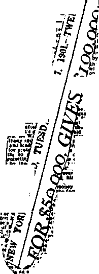

1938
Consolation
Magazine
Contents
Appetizers
Windle, Male Chambermaid, to Loae $25,000
Counsel by J. F. Rutherford “Catholic Action”
Romanism Betrays Its Adherents
Putting the Hypocrites in a Hole
By Trail and Stream and
Spain—Cover Design for This Number 31
i i.iii.h. i hv
Published every other Wednesday by
THE GOLDEN AGE PUBLISHING COMPANY, INC.
117 Adams St., Brooklyn, N. Y., U. S. A.
President Clayton J. Woodworth
Vice-President Nathan H. Knorr
Secretary and Treasurer Charles E. Wagner
Five Cents a Copy
11 a year in the United States
11.25 to Canada and all other countries
NOTICE TO SUBSCRIBERS
Remittances: For your own safety, remit by postal or express ■ money order. When coin or currency 1» lost In the ordinary mails, there is no redress. Be mitten ces from countries other then those named below may be made to the Brooklyn office, but only by Internatlortal postal money order.
Receipt of a new or renewal subscription will be acknowledged only when requested. Notice of Expiration is sent with the journal one month before subscription expires. Please renew promptly to avoid loss of copies. Send change of address direct to us rather than to the post office. Your request should reach us st least two weeks before the date of issue with which It is to take effect. Send your old ae well as the new address. Copies will not be forwarded by the post office to your new address unless extra postage Is provided by you.
Published also in Bohemian, Danish, Dutch, Finnish, French, German, Greek, Japanese, Norwegian, Polish, Portuguese, Spanish. Swedish, Hungarian, Ukrainian.
OFFICES FOR OTHER COUNTRIES
England 34 Craven 'Terrace, London, W. 2
Canada 40 Irwin Avenue, Toronto 5, Ontario Australia 7 Beresford Road, Strathfield, N.S.W. South Africa 623 Boston House, Cape Town
Entered as second-class matter at Brooklyn, N. Y., under the Act of March 3, 1879.
The two men had escaped from an ■ JRup asylum and had managed to steal plane from a near-by airport.
Up in the plane at fifteen thousand -l-jXAw JB feef one of the men grew fidgety.
“I think I’m going to jump out of the plane,” he told his companion. “I feel I can’t stand it here any longer,”
“Better take a parachute with you,” advised the other.
“What do I want with a parachute?”
The other wagged a finger.
“Don’t be silly,” he cautioned. "Can’t you see it’s raining ‘V’—Tit-Bits Magazine.
FAUX PAS
■ “Now, then, please, everybody! Gas masks off!” (Pause)
“I said ‘Gas masks off', Lady Fridgeworth, please. ’ ’
‘ ‘ I beg your pardon 1’ ’
“I want everybody to take their gas masks off.”
“Young man, I am not wearing a gas mask!”—T.S. in N. C.
■ “Methuselah ate
What he found on his plate,
And never, as people do now, Did he note the amount Of the calories count;
He ate it'.because it was ehow.
“He wasn’t disturbed, as at dinner he sat, Destroying a roast or a pie,
To think it was lacking in glandular fat Or a couple of vitamins shy.
“He cheerfully chewed
Every species of food
With very few worries or fears
Lest his health might be hurt By some fancy dessert,
And he lived more than nine hundred years.”
—Anonymous, Kansas.
“And in His name shall the nations hope.”—Matthew 12:21, A.R.V.
Volume XIX Brooklyn, N. Y., Wednesday, July 27, 1938 Number 492
Windle, Male Chambermaid, to Lose $25,000
Al Capone, now a shining light of the Roman Catholic flock at Alcatraz prison, is said to have made his first money acting as lookout in a bawdyhouse in Chicago. When he dies he may expect a place in glory with his companion, Dutch Cardinal Schultz, New York’s chief but punctured gangster of the same great big flock that now has the world terrorized. Chicago has another candidate, in the person of Charles Pliny Windle. He is coming along nicely. Take a look. ■
When the harlot of Isaiah 23:16 wants dirty work done she picks out some person who has the qualifications and doesn’t mind what he does so long as he gets his price and can thus make a living in these hard times, and so it was that when the Hierarchy was in the dirt up to,its neck in the Smoky City, in the fall of 1937, Pliny got a call to—
Along about December 1, 1937, “Reverend father” James R. Cox, of Pittsburgh,. Pa., who was going to distribute $25,000 in prizes on a total intake of only $18,000, was unhappy because the newspapers published information to the effect that three-fourths of the money went to the promoters. The $10,000 prize went to a personal friend of one of the promoters; $500, to a Jersey City man who never entered the contest and never got the $500; $50, to a Cleveland man who did not live at the address given by the promoters; $100, to a Los Angeles man who received no mail for six months at the address given; and $50, to a Hoboken man who did not even know there was a contest under way.
It is illegal in Pennsylvania for persons to give more than a 15-pereent commission to charity promoters, yet "Reverend Father” Cox told reporters he had allowed 75 percent to the promoters of the peculiar "charity” with which his name was so prominently connected; but when he came to talking to the officials of the Pennsylvania state welfare department, he told them that the commission which he had paid was 10 percent, and they announced (a little too suddenly, as it turned out) that that was satisfactory to them and that there would be no investigation.
Is it not ■wonderful that a man could flood the United States mails with a lottery proposition offering $25,000 in prizes for names, of a garden, and promising to see that the awards would be “under my personal supervision”, and that then, when the awards were made as heretofore explained, could say, “I don’t know anything about the payments”! Here are some of the statements made over Cox’s signature at the time he was looking for dollar bills:
Be assured that this contest will be conducted under my personal supervision, in a manner guaranteeing complete fairness, and affording each and every person who competes the opportunity of receiving unbiased consideration from those whom I have personally selected, for their ability, intelli-genee and integrity, to serve as my judges. It shall be my goal to conduct this contest exactly as you, as a contestant yourself, wish it to he conducted.
Besides giving the sucker who sent him a dollar such a completely fair offer as above described, Mr. Cox sent along to each poor victim a “St. Christopher Miraculous Rose Medal” possessed of “so great an intrinsic value that it is impossible to estimate it in dollars and cents”. In other words, it had no value at all; but notice how adroitly the truth is put. It shows Mr. Cox’s training in the greatest lie factory underneath the canopy.
•• As will appear from this story,
conditions were ripe for Windle to "oW'-V/A enter and make a hit. But a few more words regarding Mr. Cox. One of the newspapers of the city explained for him that—
The medal is not blessed until after the money is received, as it is forbidden to sell any blessed article.
That seems like good business. Make sure of the money first. Get cash down, No promissory notes on this. No money, no bless. What could be fairer?
On one of his previous lottery stunts, "the Belmont futurity’' horse-race proposition, Mr. Cox took the precaution to announce that— ... it is strictly against the postal laws to use the mails regarding these events.
When the police finally grabbed the gent and unearthed his papers they found among them the cheering evidence that in a period of ten years he had invested $153,552.70 in a combination swimming pool and liquor-dispensing establishment, but there was a slight difference between the investment and the assessed yaluation, which was put at $8,300, or less than 6 percent of what he “put into” it. But in these days, when money is so easy for some people to get out of the taxpayers, why worry because soipebody succeeds in hiding 94 percent of what he has cached against a rainy day?
In due time Mr. Cox was indicted, but when the case came to trial there were seven women on the jury and all he got was a very, very slight slap on the wrist, despite the fact that the indictment had specified, among other tthings:
That the list of prize-winners sent out by defendants was monumental in its falsehoods and deceptions, giving names as prize-winners of those who had never entered the alleged contest, maiden names of married women as winners, together with fictitious addresses for other winners’ names, all of which defendants well knew -was calculated to deceive bona fide contestants.
That the St. Christopher Miraculous Rose Medals sent out to contestants were not personally blessed by Father James R. Cox, one of the defendants herein, as promised in said advertisements (of the contest).
And all of which untrue, false and fraudulent representations, pretenses and promises were made and caused to be made by the defendants to the victims with the intent and purpose that the victims should believe them to be true, and, so believing, should send money to the defendants; the defendants then, there and thereby intending to defraud the victims and to obtain money from the said victims anti to convert the same to their own use, benefit and advantage without returning to the victims anything of value therefor, except the St. Christopher Miraculous Rose Medal.
The seven words at the close should have been omitted. The “Miraculous Rose Medal” is the biggest fake of all those mentioned. Supposedly blessed in the name of God, the only “blessing” it could possibly bear is the “blessing” of the Devil. Its plain intent is to draw the mind away from God and lead it to a thing made by man. A case of religion, pure and simple. Cox was merely selling diminutive idols, and every idol is accursed of God.
Here was a chance for that noble, high-minded, intelligent, astute idealist, Charles Pliny Windle, of the same city as Mr. Al Capone, to come to Pittsburgh and straighten things out and clean things up. Did he do it! Did he! You don’t know the half of it.
He came all right, and there is a three-column account of his coming in The Irish World of December 11, 1937. He did not say anything about Mr. Cox. He had something else on his mind and wanted everybody else to have something else. That is why he came, and probably why he was sent for. The headlines read:
Non-Catholic lecturer raps the ill informed who speak blind prejudices; Flays Rutherford, whose propaganda is aimed at all creeds; World-wide net; A true Protestant does not fear the Church.
Pliny has for sale a little book which he calls “The Rutherford Racket”, which is his name for designating the message of God’s Kingdom. In the story in The Irish World he is described as “editor of Truth and Light and of The Liberal (Iconoclast)”. They must be important papers: there is no mention of them in the office copy of the American Newspaper Annual and Directory.
But Windle has found how to make a living, and that, gentlemen and ladies, that, to him, is a real achievement. He has learned that the message of God's Kingdom is making itself felt; that the Roman Catholic Hierarchy is frightened, and justly so; and he is doing all he can to enhance and encourage that fright and turn it into a bread tidket for himself and his family.
Hence, instead of attacking Mr. Cox, he attacked one of the finest Christian gentlemen in the world, Joseph F. Rutherford; and this article will tell you something of a more recent attack, cleverly gotten up, representing Justice blindfolded on the cover, with the words, “1,000 Reward; Jury Summons; Judge for yourself” and an imitation legal sea^ Mr, Pliny explains that his little book of 28 pages (10c a copy) is “In the interest of Truth and Fair Play” and that—-
I hereby agree to forfeit $1,000 for proof of any material error, false statement, or distorted historical or other reference found in my indictment of “Judge” Rutherford in this booklet.
don’t get frightened and that poor Windle has any when as late as Novem-1937, he did not know if he would be able to keep
ife how, imagine £10 $25,000, IllggSS '3er bk|SSh| for sure
afloat. Are you so foolish as to believe that any man wotild make himself liable for the throwing away of twenty-five thousand-dollar bills who would write to such a person as Leo Connelly, alias Tom Bosey, alias Fitzpatrick:
Our monthly orders fit in admirably with our plans to build a permanent Light and Truth cir-■ eolation. You. are doing swell. Keep on getting orders and I may be able to do something at the Bank. As you know the matter of immediate financing for your expenses and printing is our only obstacle. If we ean keep building circulation for another two months, we will have a nice margin above expenses. If I had $1,000.00 to work with, we would be assured of circulation around 100,000 within three months, as Bishop Sheil has assured me he is going ahead here. However, I cannot see him until after Wednesday and I do not know how soon some funds from that source will be available.
I can raise some money, as we demonstrated here, but I wanted to hold oS until I closed with the bishop. Besides, I . need every minute in the office.
Perhaps, the Most Reverend Bishop at Cleveland would help at this critical point with a substantial order for copies of the Rutherford Racket, or a loan for six months. It would be the greatest thing he could do to help build a mighty bulwark against atheistic communism Rutherford’s religious prejudice and enemy forces which aim at the destruction of religions, morality, and inalienable rights.
When losing, money jt is. harder, probably, to lose the first $1,000" than it is to lose any other $1,000 afterwards, so Pliny tried extra hard to make sure he would lose this first thousand. First he started off with a statement of the value of the Golden Rule, to which he fully subscribes, and then gives the examples of how he applies it that sets him back $1,000 if he stands by his offer.
(a) In the Gulden Rule alone is ample medication for most of the ills of nations. If individuals and nations would do unto others as they would be done by, and refuse to do unto others what they would not have others do unto them, most of the difficulties and troubles of the world would vanish like mists before the morning sun. [Page 23]
(b) In spite of a total lack of logic and a supreme contempt for the truth which he pretends to revere, the “Judge” is a clever cuss who with weasel words deceives a great many people. When he wrote his new pamphlet, “Cure”, he employed his usual method of mental chemistry. He took a few facts relating to the distress of nations all over the world, threw in a generous portion of suspicion and prejudice, added the poisonous roots from various plants in his tenderly eared for garden of falsehood, poured in a large pail of bitterness, dumped in a supply of delusions; used plenty of gall, put in a whole mass of weird prophecies and misinterpretations of the Scriptures, stirred it vigorously with the spoon of malice, and brewed the mess in the witch’s kettle of Hatred over the hot fires of a wild and vivid imagination. [Page 22]
I wish to state without equivocation that the championship medal for plain and fancy lying— for little lies and big lies, useless lies and malicious lies—goes to “Judge” Rutherford. All other contestants in this field are pikers compared to the head of the witnesses of Jehovah. Most liars will tell the truth occasionally merely by accident. Usually they come up for air between lies. But Rutherford has no such limitations. [Page 16]
Windle seems to feel that there is some danger he may not lose this first thousand, and so he expands on the subject of the Golden Rule, continuing to show that he is anxious to do to Judge Rutherford as he would like to be done by. The judge himself he describes as “this champion liar” (p. 17), “a. purveyor of falsehood, a distorter of Holy Writ” (p. 27), “a madman” (p. 9), thus leading the mind gradually to the statement of Holy Writ itself:
The Jews therefore answered and said to him: Dp not we say well that thou, art a Samaritan, and hast a devil?—John 8:48, Uduay (Catholic) Version. ' .... . . .
The judge, according to Mr. Windle, ‘'has a fondness for deception” (p. 4), “a colossal impudence” (p. 21), "is a false witness” (p. 3), and is one of Jehovah’s witnesses for whom “a splendid name would be ‘Murderers of Souls’”. (P. 14) And further, ‘‘For sublimated gall, and unfettered impudence, and blatant blasphemy the claim of Rutherford to be a Witness of Truth and of God stands on the highest pinnacle of Absurdity.” (P. 17)
Mr. Windle does not chance to mention the particular one of the 210 American religious sects that meets with his special favor. This might let him in for a little gentle criticism of some of the teachings to which he subscribes. The most he will say for himself is that "The author is a non-Catholic” (page 2 of his booklet “The Rutherford Racket”), but for some reason he wishes to make it clear that, at any rate, he disapproves of Judge Rutherford’s expositions of Holy Writ, and accordingly expresses his opinion of them in the following words, which, to his mind, express The Golden Rule:
No reliance can be placed in his statements, no confidence in his teachings, and no hope in his “cure” [p. 27]; [his] “propaganda constitutes a vast deception” [p. 3]; [his] “vast and amazing array of Bible misinformation, prophecies, contradictions and wild imaginings constitute a veritable Labyrinth of Error” [p. 14]; [his Bible instruction constitutes a] “mass of interpretations and chronic misuse of Bible quotations” [p. 18]; “his demoralizing philosophy” “seeks to arouse the corroding passions of class and religious hatreds” [p. 2]; and that is something C. Pliny Windle would not do, not at all, unless he could get the coin out of Bishop Sheil or Bishop Schrembs to keep affoat his peculiar industry.
It seems further that Judge Rutherford’s expositions are “wild ravings” (p. 9), “contradictory, misleading and erroneous interpretations” (p. 25), “arouse bitterness and hatred” (p. 27), which, of course, Windle would never think of doing, and “no greater delusions ever existed outside of an insane asylum”. (P. 27)
The harlot’s chambermaid wants everybody to know that “no man is less qualified” “than Rutherford to act as interpreter of the Bible” (p. 27) and "this quack doctor’s villainous prescription had better be left to the imagination”. (P. 23) The theme of the booklet Cure is a "lunatic contention” (p. 24) which proposes “the application of mental poisons to the minds of millions of people”. (P. 2)
According to Windle, his work in the vineyard of the Lord constitutes a “vast campaign of deception” (p. 4) in line with “his constant practice of deception upon credulous people” (p. 5), which is “a fake because it is based upon the delusion that the millennial reign of Christ is here”. (P. 25)
Like the Jews that said and did to Jesus every evil thing they could think of, Mr. Windle forgets what a jam he is in if the very “strange work” of which he complains (Isaiah 28:21) is in itself an evidence that the reign of Christ is here. Has he read enough of the Holy Scriptures to know that those who will not submit themselves to the new King are doomed to death everlasting at His hands? —Luke 19:27.
His final effort to show his contempt for The-Golden Rule is really funny. He says of Jehovah’s witnesses as a whole that “they offer the mad mutterings of ‘Judge’ Rutherford as the basis for the salvation of the world” (p. 27); whereas every single one of those witnesses knows, believes and spreads the message to earth’s remotest bounds that the Devil’s uninterrupted rule or “world”, which Windle hopes to save, has been ended and what he and all the theologians, Catholic and Protestant, are trying in vain to do is to “put humpty-dumpty back together again”, a thing they will never do. Their terror and despair will continue to increase until they them-splves are for ever blotted out by a just and angry God. When that time comes Windle will not mind the loss of this first $1,000 which he is hereby, in the court of Public Opinion, adjudged to have forfeited.
The place where Windle loses his second $1,000 is in his not knowing or accepting God’s cure for the present ills of humanity; but here it is:
And in the days of these kings Shall the God of heaven set up a kingdom which shall never be destroyed: and the kingdom shall not be left to other people, but it shall break in pieces and consume all these kingdoms, and it shall stand for ever. —Daniel 2: 44.
Ask of me and I will give thee the nations for thine inheritance . . . Thou shalt break them with a rod of iron, thou shalt dash them in pieces like a potter’s vessel.—Psalm 2: 8,9, A.R.V.
After this manner therefore pray ye: Our Father which art in heaven, Hallowed be thy name. Thy kingdom come. They will he done in earth, as it is in heaven.—Matthew 6:9,10.
Now come some of Windle’s expressions which show his complete confusion on this vital subject, and that he places the accursed maladministration of Hitler, Mussolini, Franco, Stalin, and many others that could be named, far and away above the reign of the Son of God above promised and now here:
The “Judge” condemns all forms of government. [P, 2]
It challenges all government. [P. 3]
Rutherford’s sole contribution to the problem and science of government is to condemn all human government as the invention of the Devil, and to state that no form of government holds or ever can hold any hope for mankind, [P. 6]
No reliance can be placed in Rutherford’s statements and accusations, no faith in his philosophy, and no hope in his “cure” I [P. 3]
Judge Rutherford is trying to palm ofi on the people a fake cure for the ills of the world. [P. 22]
Rutherford’s cure is a fake because he tries to deceive people into believing that it is God’s cure. [P. 25]
Judge Rutherford has no cure of his own to present. He simply points to the kingdom of God as the only cure, as set forth in the above and numerous other passages of Scripture cited and quoted in all his writings.
By the evidence above presented Mr. Windle is hereby adjudged in the court of Public Opinion to have lost his second $1,000.
No other living man has done as much to improve all government on earth as has Judge Rutherford. This is not limited to the publication of his work Government, in the hands of the public to the extent of 2,528,500 copies, nor the booklet of the same name, with a circulation of 8,664,883 copies, nor the Cure booklet, with 10,000,000 put ouf in the first three months of its circulation, but all his writings, to the extent of now nearly 300,000,-000 copies, are brimming full of the same inspiring message.
But it does not cease there. The same message has gone out over the radio to all the world, sometimes to as many as 450 radio stations at once, and for years on end, reaching virtually all the human family that desired to listen in. Further, on hundreds of occasions the judge has personally addressed vast audiences of up to 30,000 at one session, JULY 27, 1038 and still does so, one such audience in Sydney, Australia, April 22, 1938, and another in Seattle, Washington, June 5, 1938, with more to follow.
Nor does it stop there. No man in public life has done more to bring to men in public life at Washington, D.C., their responsibilities toward God and toward their fellow men. Petitions to the Government, circulated with his knowledge, consent and supervision, and signed by some 8,000,000 persons, have pointed out definite steps that cduld be taken to improve government and obtain the Lord’s blessing upon the worthy, and the attention of the president and of Congress has been repeatedly drawn to violations of the fundamental law of the. land. He further advises all to be law-abiding and orderly, in harmony with Scripture.
With the above information accessible to all, Mr. Windle, in the court of Public Opinion, loses his third $1,000 for making the following statement:
He would have people sit back, make no attempt to co-operate with government, nor to improve government. [P. 25]
Judge Rutherford is the author of a book of 128 pages entitled Millions Now Living Will Never Die, published in 1920, but not now in print, of which up to October 1,1921, 3,366,000 copies were circulated. The book contains full, ample evidence of'the validity of the title and its truth. It is supported by an array of not less than 473 scriptures bearing directly upon the subject. It could hardly be expected that in this article the contents of that publication would be repeated or discussed at length.' It speaks for itself.
Please observe that in his statement below Mr, Windle examines this subject not at all, but, doubtless backed by both a Jesuit pen and Jesuit money] he parted with his fourth $1,000 in the court of Public Opinion by making the statement that—
Rutherford’s cure is a fake because he preaches that millions of people now living will never die— that they will dwell in perfect bliss in a heaven on earth. [P. 27]
What Judge Rutherford preaches regarding these millions and their future is the absolute truth, but neither Windle nor his backers will ever have any share in it anywhere at all.—Jeremiah 25:29-35; Isaiah 66:24.
Nowhere in the literature that has come from Judge Rutherford’s pen is there the slightest basis for the following effusion by Mr. Windle;
His “cure” is a vast deception that rests wholly upon rejection of religion, contempt for all government, and membership in the Society of Jehovah’s Witnesses. [P. 27]
The witnesses will all laugh at this statement of Windle’s, because they all know, and constantly tell the people they meet, that— This does not at all mean that such sincere persons must join any organization under the sun. [Judge Rutherford’s own statement in his book Enemies, page 21, See also booklet Uncovered, page 60, paragraph 1.] . x
For this direct misstatement Mr. Windle hereby forfeits another $1,000 in the court of Public Opinion, making it the fourth sum of this amount assessed against him for being too careless with the truth. In this world it is best not to get too fresh. There is always a chance of getting caught.
It was the great Author of the Word of God that preserved it. He used various instrumentalities; among them the Hebrew scribes who shielded it for centuries before any such institution as the Roman Hierarchy came into existence. He used Ptolemy II to have those Scriptures translated into Greek [the Septuagint], and the Greek Scriptures were never at any time in the custody of the Church of Rome. He also used the Syriac language and Syriac scholars to preserve the Scriptures, independent of the Church of Rome. The Church of Rome as the Roman Catholic Church is not once mentioned in God’s Word, Now notice what Mr, Windle says;
Were it not for the Catholic Church there would be no Bible.
This is a fundamental error, certainly worth another $1,000 from a man that promises to bestow them so freely upon any who can find “any material error, false statement, or distorted historical or other reference” in his work.
It sometimes becomes necessary in a case of this kind to fine the defendant twice because he puts two lies so close together that they cannot conveniently be separated. The readers of Judge Rutherford’s publications all know that he teaches that the kings and prophets mentioned in Hebrews 11 are asleep in the tomb, “in the dust of the earth.” In no sense are they in heaven; nor, for that matter, will any of them ever be in heaven. Nor has the judge at any time stated that they were to appear in 1930. Now notice how wildly Mr. Windle strives to serve the harlot for whom he works, when he says :
The “Judge” claims that while “Christ” is reigning invisibly on earth soon the Kings and Prophets mentioned in Hebrews 11 will come down from heaven and act as Christ’s visible governors. He propheeied their return to earth for 1930, but when they did not appear offered the reason for their failure to be a special dispensation to permit the witnesses of Jehovah to continue their'work a little while longer. [P. 26]
For these two lies Mr. Windle is now sentenced to pay $2,000 in the court of Public Opinion.
In Berlin, Germany, regularly during 1933 and the early part of 1934: the “Reverend Father” Ros-saint, “Reverend Father” Kremer of Remscheid, “Reverend Father”
Steber, “Reverend Father” Clemens, “Reverend Father” Himmes and “Reverend Father” Schaefer were tried for reading and circulating Communist literature. The New York Times had a sixteen-ineh story on this when the trial was in its second week. It is difficult to see how any honest man can question that here was a case in which the Roman Hierarchy was caught red-handed in the manufacture of real Communist propaganda.
Rossaint, Kremer, Steber and Clemens introduced Communism into Catholic Youth groups, and Rossaint allowed Communists wanted by the police to sleep at his house; he also distributed Communist literature. Mr. Windle, on page 17, offers $1,000 for proof, among other things, that the Catholic Hierarchy organizes political agitators into parties, ever organized a Communist party, ever financed a Communist organization, ever encouraged such an organization, etc., and therefore forfeits another $1,000, because the evidence in the above ease is quite sufficient. See The Golden Age, July 14, 1937.
In his booklet “The Rutherford Racket’’, page 27, Mr. Windle said: ■ Catholic Church from its incep
tiOn has been a sort of balance wheel A“ for civilization.
Then when he came to get out the new booklet he broadened it, and said:
The principles of religion form the balance wheel of civilization.
Just think about that a little. The Shinto religion, with its 8,000,000 deities, is responsible for the millions’ being murdered in China; the Moslem religion is responsible for other millions slain in the 'holy’ wars that decimated Northern Africa and the Near East; the pagan religions of Africa were responsible for cannibalism and disfigurement of the human body; the Aztec religion was responsible for human sacrifices; the “hell-fire” and “purgatory” religions have driven millions insane and covered Europe with blood and tears. For this error Mr. Windle forfeits another $1,000. This makes $10,000 so far.
This office has in its possession rt? n°t less than fifteen pieces of evi-dcnce of Roman Catholic churches’ being used as arsenals. The public * press has supplied ample evidence that this was done in Spain, Switzerland, and Austria; and since this is legitimate “church” practice in the most Catholic countries in the world, Mr. Windle forfeits another $1,000 for hastily saying:
To put Rutherford to the acid test, I hereby agree to forfeit to him $1,000 if he can prove his charge or Sead me to a single Catholic Church in the basement of which are stored quantities of guns and ammunition.
Judge Rutherford could do this in Mr. Windle’s own state, but the way his offer is stated that is not necessary. He neglects to fix geographical limitations, and his carelessness on this little detail costs him $1,000 and saves the inconvenience of a long trip, an unpleasant reception, and a total failure on Mr. Windle’s part to live up to any financial promise he might make.
No one can deny that the pope and the bishops are morally responsible for the war
JULY 27, 1918 in Spain, the rows on rows of boys and girls slain on the threshold of life, the men and women to the extent of now about one million, that were put to death [some of them to music] with a bloodthirstiness unequaled in history. These incidents have been set forth in such detail by even Catholic writers in the public press that they can on no account be denied. The Golden Age and Consolation have published much of such evidence and have much more yet to be published. No one can deny that the pope and the bishops are priests; and therefore Mr, Windle forfeits another $1,000 because he said:
There is no Catholic doctrine, Rutherford to the contrary notwithstanding, that gives the priests power to grant an indulgence to commit a sin, much less a murder.
The murders of Franco the Butcher are not less murders because they are by the tens of thousands, and everybody knows that the pope bestowed his “blessing” upon this fiend and that the Hierarchy helped him get his start by turning the churches into arsenals and recruiting stations.
With thousands of Jehovah’s witnesses imprisoned for preaching the gospel, not only in Germany, where four thousand of them are the special objects of the wrath of that country’s Roman Catholic dictator, but hundreds of them in recent years right in Mr. Windle’s own state, namely, at Elgin and Peoria (and many other places), Jehovah’s witnesses know a whole lot more about the coercion practiced upon them than Mr. Windle could ever learn.
They know of the disreputable methods used by the Hierarchy to gag radio owners and managers in the United States, Canada, Australia and elsewhere, to prevent the message of God’s Kingdom from going out to the people, yet Mr. Windle, in his effort to lose as much as possible, parts with another $1,000 for accusing Judge Rutherford of falsehood in making the following truthful statement:
For many.centuries the Catholic Hierarchy has operated the most cruel, wicked and defamatory organization that has ever been on earth. They employ coercion and the gag, and any other unlawful means necessary to accomplish their cruel purposes. When they want someone killed they make, the killer .-believe that the priests can fully absolve him from all wrong and clear him ifrom all punishment, here or hereafter.
No one can question the fact that the Hierarchy claims the right to kill Protestants, or even their own people, if exigencies arise when they think it will work out for the welfare of the “Church”. It was because the Hierarchy hopes to get ahead in Ethiopia and get back in the saddle in Spain that it consented to and approved the horrible deeds committed in. both of those lands. So it ‘ costs Mr. Windle another $1,000 to make the evasive statement that—
There is nothing in the doctrine of Penance that permits a priest to send someone out to commit a crime with a promise to give him absolution.
This is cleverly stated. When the matter of killing Protestants is up, a priest would rule that that is not a crime, and when wholesale murder, as in Spain and Ethiopia, he would probably say that is outside of the doctrine of Penance. Nevertheless, somebody is entirely responsible for murdering 1,000,000 people in Spain, and it was the pope’s man, Franco, that started it, and it was in his churches that the arms were stored and the plots against the Spanish Republic were formed.
It is very easy for a guilty man or a guilty organization, when some righteous and courageous person calls attention to its errors, to try to raise the cry that it is being misrepresented, hoping thus to deflect or at least defer the punishment due. The Catholic Church always does that; it is a fixed principle.
)l UM
urr and j
j>*r Cl*.’ do its w 4?
t, • *nd! “ ntttt-id
rman
famblers captu] fifteen’* kte lUenmjnctl 1 Iffhp will, U re;? Ibli name, and I under which
Traver*/ he Criminal Q . Thl* man la i at'rambler*, nj fuen Of tWerrt! i iome in th* fie/ p* ien only *ucw *Ei*(Kn end oU ^2 J ib ratublen, atlon, / ctarito Au v nr and varlt \J" I fortune*, r ^7
Forever and forever the Catholic Church insists that it is right on every poipt on which it is absolutely and forever as wrong as the Devil is wrong. It was and is because he knew that that Judge Rutherford took such pains in his booklet Uncovered to quote Catholic authorities on every point therein raised. That little booklet completely exposes the Roman Catholic Hierarchy’s principles, doctrines and objectives, and therefore Mr. Windle forfeits another $1,000 (making $15,000 up to now) for saying that:
By misrepresenting Catholic principles, doctrines and objectives, he creates in the minds of many people a wholly false image of the Catholic Church—a chimera that has no real existence. [P. 8]
crowd* I “A* n result of Our prertaUr# on every Iide fy
,(EfiGOy ‘RIGHTLY BERTH
ORFEII 4
—____ ,.© G
FOR HERETICS”
arke, Feelir/^ / *^f
cLinn * J
jetion, Belie/Jw « Left the C’*T
New Brunswick (N- J.) Priest Says Catholics Would Thus Stop Spread of “ Errors."
dt> not doubt, If th*/ weir* olronf tnoUfch, that th* Catholic people Would bit)-'Tor. even by.death if nicerwy t-hr jsprtcd or h«f?ticoj error* among' th* people, t>nd I **y rJjyhtly bo.”
Tfih we* th* i tetemeut made by th* H*v,
pertain /Daty,
■« v«re i iport*
or dor-
sibldE* Iriend* tonly u th* Com-on hla vtretc, h* prominent n tM* cltJ' politician-unBundeit continued bften driven lUr Md-beCn rch of that AMa ifld lu
from kA* it» fact y«main* from hl* usual caretaker Vt hl* *rit* I* *w*X cut not know where tilurn or when h* d xoae.
11*4 by the Com* vtiinr of February • *• * chup tar* mleite wh«el and ever, whlap*r*4 Into
.... to hl* rtpeaiiru on th* nirtn'of March; archlnr the ftOcr, Twdlj-, r*l**d 11 *jid hrourht lo Fl collectin of rombUD* tuHi In thjJ city.- .
Homan Catholic Church, 1a New Bruna wick, N. J.h Friday evening! The Pau|l*t Father* have been cobdurtlnf 4 mleslon for the. las: (Ute* week* in that church. Last week tbt aervitts w*re for th* bemeflt «f non-Catho* lie*.
A feature of Imt we*k'c service* wa* a "QUeiLlon bo*." TTiln question wu md by Father H*rn*y cn Friday nitht;—
"D»*w ihe carbolic Church regard Prot-eaEanti heretics, ami doea It nOI b*fl*e* and Ltien that heretics ahouid be rniniohad, *von wnh death If necessaryF* -
Father Harney'* anaWer ulss:— '
‘■In ■ way, I eay yes. Certainly the Churth doe* consider ProiMtonta H*rc{fa. In inter.
1 A-1 form*! heretic J* one who know* h* I* pervernnr the truth* «f God and the Cath. ell* Chirrcb, No man, by sinning hinuelf, ibouJd be allowed to toad other* into «in.
*'i dj> not doubt. It they were. btftfrl .eaoufrb, that th* Catholic people would hinder. *v*n by death if ne^eeatry. the iiwetJ of toeh error* through the peapie. And 1
,fA* human WKletyjproteef* Li^elf saahurt tu tn'jMenr an! tff* rx^n who uiw<« « LftltOT lb the froverniseni,, *o Lh* Church Of God hu* th* right to rr^tecb lC»IL The Co cholic Ch etch never dFenmed of puniahlnft one ahp i* materially * heretb’—on* who believe* thine* io b* true that *ra dal true— any more than * fcthw would punlxh his child' who doe* wroftjt unlnt*ntian*|]y. The .blotury of the riiurcA ha* bren < hfoiury oi CdttMtloa. . .
, "T’ha Cnihoik* have proved mor* tderaac aUu ib* ProLefiapt*/1 •
' In:an 'fnttfvl** last Hlfht, Father Honor Mated that bis rwarks an Friftiy *v**1n<, a*, above quoted, were correct,- He oatd they - espbetaed hl* perrcnal aonvletloa* and-were Uq accord with tho*« of (be.Calbotlc CAtiFah.
New
Ac
iiuiyracuiDDiv
The Greek word agape means love for Jehovah God, with all the heart, mind, soul and strength, and for one’s neighbor as for one’s self. It is this love for God and man that consumes Jehovah’s witnesses, takes them from home and kindred, causes them to endure privations, imprisonment, scorn and abuse
such as Judge Rutherford received at the hands of Mr. Windle and from thousands of others, and yet this does not prevent Jehovah's witnesses from going right on, taking the message of hope and love to all who will hear. This word agape is commonly mistranslated (1 Corinthians 13, D iniay Version) “charity”, a cold and formal thing that needs no love whatever in it. But in the proper meaning of the word, there are no other people on earth as truly charitable as Jehovah’s witnesses. There are things people need more than tips or crusts. They need the truth which religion of all forms has denied to them. Therefore Mr. Windle hereby forfeits another $1,000 for his statement that—
The witnesses of Jehovah have nothing to do with charity, [P. 11]
Two of the pointed warnings against religion, and particularly against the Jewish religion, are contained in the following scriptures :
He that killcth an ox is as if he slew a man; he that saerificeth a lamb, as if he cut oft a dog’s nec-k; he that offeretK an oblation, as if he offered swine's blood; he that burneth incense, as if he blessed an idol.-—Isaiah 66: 3.
And when ye spread forth your hands, I will hide mine eyes from you; yea, when ye make many prayers, I will not hear: yoiir hands are full of blood.—Isaiah 1:15.
There are literally hundreds of passages that prove the same thing, but these are ample basis for Mr. Windle’s forfeiting another $1,000 for saying:
I challenge Rutherford to show any Scriptural proof that God ever warned the Jews against the principle of religion or hade them turn from religion. [P. 18]
A great call is now going out to abandon religion and come over on God’s side, on the side of Christianity, and a great multitude are hearing that call. Mr. Windle hears the call but does not understand it. To him everything churchy seems all right, and from the fulsome way he writes about the Catholic church, which is the most churchy of them all, he seems to think that the more churchy a church is the better it is. It is just too bad that he does not hear the call to reform his judgment and his practices; but others are wiser, and so there is a world of meaning in the text:
JULY 27, 193g
And the Spirit and the bride say, Come. And let him that heareth say, Come. And let him that is athirs] come: and whosoever will, let him take the water of life freely.—Revelation 22: 17. See also Ezekiel 9: 4-10 and Revelation 7: 9,14.
Because he does not understand this and other passages, and because, therefore, he misstated the facts, Mr. Windle forfeits another $1,000 for his utterance that—
The Scriptures do not declare that ‘a great multitude will forsake religion’, [P. 18]
The first time that the message '^Millions now' living will never die” was ever uttered w'as February 24, 1918, in Los Angeles, by Joseph F. Rutherford, and therefore Mr. Windle at this point loses another $1,000 for saying [regarding C. T. Russell],
Russell, who was quite convinced that he was one of ’the millions now living who would never die’, passed away in 1916. [P. 14]
Windle should be more careful than that, throwing away thousand-do liar bills.
Windle forfeits another $1,000 for the baldheaded, barefaced lie,
Pastor Russell “proclaimed himself to be the Seventh Messenger of God to enlighten people on earth”. [P. 13]
He never did anything of the kind, and not a scratch of evidence can be produced to back up this misstatement. Forfeitures thus far, $20,000.
Windle forfeits another $1,000 for the grotesque and impossible lie,
Pastor Russell relieved the strain on his mental apparatus by beating up his wife on sundry occasions.
This is the first time in 44 years’ active service of the message of God’s Kingdom and intimate acquaintance with both C. T. Russell and J. F. Rutherford, two of the finest Christian gentlemen1 that ever lived, that this writer ever heard any such twist put to the newspaper persecutions of a man who died 22 years ago this fall. A liar must be hard put to it for material, to tell such whoppers. But Windle feels that he must earn his money somehow or the Hierarchy will not provide him with the bread ticket which, to him, seems all important.
11
The humblest child of God, speaking any language, and living in any land beneath the sun, can confidently draw the attention of Judge Rutherford to any statement that seems out of line with God’s Word and be assured of a kindly consideration of his honest proposal that the subject be further examined. It is so well known to all Jehovah’s witnesses that this is fundamental, that is, that Judge Rutherford as well as they are being led and taught by Jehovah God and Christ Jesus, His Son, and that all together are “walking in the light” which “shineth more and more unto the perfect day”, that Windle forfeits $1,000 more for rashly saying:
Not the Bible, but the “Judge’s” interpretation of it, form the treed of the witnesses. They must accept the “Judge” as final authority on all Bible teachings. No deviation from his views are per-, mitted. [P. 14] '
Mr. Windle forfeits another $1,000 for the falsehood concerning Judge Rutherford that—
This is the man who poses as an infallible interpreter of God’s Word. [P, 22] ’
He does nothing of the sort, as every reader of his writings knows very .well. He constantly and consistently holds that the only One who can explain the Bible is the One who wrote it; and this the Lord is continually doing. How very different this prayerful, ■ careful, thoughtful attitude from that of the allegedly infallible pope Mr. Windle so eagerly defends.
After all the evidence mankind now has of the effect of religion upon the human heart, as manifested by Japan’s devilish religion in China, Stalin’s devilish religion in Russia, Hitler’s devilish religion in Germany, Mussolini’s devilish religion in Ethiopia, and Ambrose Ratti’s devilish religion in Spain, it becomes necessary for Mr. Windle to forfeit another $1,000 for his foolish statement,
What the world needs is more religion, not less religion. [P. 23]
The question as to whether or not Judge Rutherford is an authority on the Bible is adequately settled by the fact that the Roman Hierarchy can employ windbags and frauds like Windle to do its dirty work but it has not the courage to meet Judge Rutherford in a radio debate on the fundamental doctrines of the Catholic Church, even though millions of its own people have requested such a debate. That is all for now. Windle forfeits another $1,000, total $25,000 for 25 master lies, this last one on page 6; but he told many others, also.
Consolation holds some more material to use, if it seems desirable to do so, showing that Windle is a fertile liar, a tool of the Hierarchy, and a son of the Devil.—John 8; 44.
Bishop Hennemann of South Africa claims that in 1934 the Roman Catholic adherents in the Union of South Africa were 361,694, and that by 1937, only three years later, they had grown to 472,938. On the same occasion the archbishop, Bernard Gijlswijk, remarked:
The centenary of the establishment of the Roman Catholic Church in South Africa was of national significance, because it reminded the nation of the just and liberal gesture in allowing the tree of religious freedom to be planted in the soil of the country. For this gesture the country was indebted to both English and Dutch rulers.
Take a moment to think about this. The Roman Hierarchy is granted “religious freedom”, its own definition of which is that the Roman Catholic Church is free to teach what it will, and that one of its teachings is that no church but its own may exist in the country, and that all “heretick”, i.e., persons that will not bow to its will, may be destroyed. Some freedom, that! And further, it does not say that the Hierarchy itself is indebted to the rulers for granting such freedom to such a devilish institution, but it says that “the country” is indebted to the rulers for granting it such freedom. Indebted for what? Indebted for inviting into its bosom a deadly viper that will not hesitate to sting its host to death.
xi- i April 18, 1938, tlic pope ex-
'■ '/f tended his “blessing” to Franco
fe- I 5, ’•I the Butcher, one of the worst mur-iL V ■ I derers of all time, and then, five days later, showed what a 100-per-cent perfect hypocrite he is when he made the following statement to 2,000 married couples:
Woe unto the world if the future were in the hands of men. We constantly see that men are always ready to damage and destroy everything even up to the point of killing each other. What are in fact these wars of which we have received news from the East and West if not men who seek out other men to kill them—and kill them in the greatest possible number and the worst possible ways? That is ■what war is. Woe unto us if our future were in the hands of men. It is in the hands of God, for which reason I have invited you to follow the example of the pope.
“Woe unto the world it the inture were in the hands of men, ’ ’—Pius XI
The pope unquestionably knew all about the Spanish war long before it started; for his churches in Spain were the arsenals where the arms ware stored with which to begin the campaign, and when the insurrection began almost all the priests enlisted with Franco’s troops. Modern IJncivilization, however, put up such a holler when his Italian and German planes killed 872 persons in Barcelona in 48 hours’ time that the pope, under pressure, had to slap Franco on the wrist and say “0 you naughty Franco”. But this was offset the next day by Cardinal Hayes, of New York, saying he is praying for Franco; and quite probably the pope instructed him to make that very statement. Franco's “government” was officially recognized by the pope on May 16, 1938.
One can have a good measure of appreciation of the kind of civilization in store for the world, if, as and when Fascism (Catholic Action) gains full control. While Franco’s troops were in control of Teruel, not only were a fourth of the inhabitants put to death, on complaints of the Roman Hierarchy that they were not loyal to the church, but, says Lawrence A. Ferhs-worth, newspaper correspondent, and himself a Catholic, on at least one occasion the executions were turned into a fete. “The plaza was decorated, crowds applauded each exe.e.u-tion, and afterwards the band played and there was dancing.”
Several hundred of these were done to death as a result of being denounced as sympathizers with the Loyalist cause by the pastor of the church of San Miguel. Let this testimony of a noble and honest member of the Catholic population against the bloodthirstiness of a Catholic priest speak for itself. When the Loyalists captured Teruel, population 12,000, they not only learned of the murder of a fourth of its inhabitants, but released from a single prison cell thirty-seven women and eight babies who had been kept in that cell for an entire year.
Some idea of the meanness of Franco may be derived from the fact that among the Basque patriots murdered by his command were three women, one of them a married woman who leaves five children, and one of them a widow who leaves six children. It is on men like this that the old hypocrite at the Vatican bestows his “blessing”.
JULY 27, 1933
13
♦ Near Brihuega, Spain, the Italian troops fighting in the pope’s armies against the Spanish people suddenly awoke to the fact that the Spaniards mean business, and that this war is real war. They thereupon dropped everything and ran. A dispatch says:
They threw away their rifles, their gas masks and their knapsacks. They left cannon of various sizes, mortars, more than TOO machine guns, hand grenades by the thousands, and thousands of trucks, bicycles, tractors, food, clothing, tools and field radio and telephone sets. It will take the Loyalists five days to collect all this material, of which we saw a large amount. One commander estimated it would require 700 trips by government trucks to carry it all back to the lines. Two whole munition depots established by the Rebels in expectation of further advances were captured. This list could be continued indefinitely, but it would serve no purpose except further to establish the contention that this is not just a retreat but a collective panic.
On the whole, it looks very much as if it was not a bad thing that this particular delegation of Italians came to Spain, instead of being sent to Ethiopia, as they were falsely told was their destination. It is one thing to start out imagining yourself as a colonist in a conquered land like Ethiopia, but it is another thing to wind up finding yourself fighting liberty-lovers. Ever since then Mussolini has been trying to bring some glory to Italy to take the sting from this debacle.
♦ One Italian Fascist captain, who had calculated on marching his high-steppers into Madrid, made a' sudden discovery when his forces ran into the Spanish Republican army. After a little experience with desperately determined infantry bayonet attacks, tank attacks, night attacks in a pouring rain, cavalry attacks and uninterrupted air raids, he hid in a cellar, crying like a baby, and said, “Do what you like, boys, I’ve had enough.” In one place the Republicans found the bodies of four Italian officers—a lieutenant-col on el and three captains-—who had committed suicide because they discovered that there is a difference between real men, fighting for their liberties, and a bunch of black-tailed roosters misled by a coward and murderer into thinking that the war in Spain would bring them glory. It is too bad that the slayer of Matteotti was not among them. ■
♦ Just before the walloping received by Mussolini’s army at Brihuega, Spain, he wired his Spanish commander as follows: ,
Aboard the Pola on my way to Libya I have received your dispatches in eonneetion with the great battle which is proceeding in the direction of Guadalajara. I am following the incidents of the battle with unshakable confidence because I am sure the impetus and daring of our legionnaires will break the enemy’s resistance.
Just imagine the head of a country sending such a dispatch to his own army fighting for the overthrow of a government with which Italy is supposed to be at peace!
♦ Not only is Italy at peace with Spain, but it js so much interested in preservation of the peace there and throughout the world that it consented to act as one of the guardians of the Spanish coast. Fine! On the other side of the ledger, just while she was acting as such guardian, the map section of the Italian general staff was transferred from Italy to Cadiz, Spain, and 15,000 soldiers were landed there openly and shamelessly. The refreshing thing about Mussolini’s hypocrisy is that he boasts of it, and with beautiful impudence claims that he learned it from Britannia, and occasionally a liberal British paper admits that such is really the case.
{A dispatch from Gibraltar to the New York Times stated that seven months later 5,000 well-armed Italian troops landed at Cadiz from three Italian warships and were at once hurried off to fight with Franco and his Moors.]
♦ For publishing an article entitled “Spain the White Abyssinia” a few months ago a Costa Rican editor, Senor Francisco Marin Canas, was sentenced to ten days in jail, as it was considered that the article was a reflection on the Italian dictator, Mussolini. The law, that no one may criticize a friendly government, is now exceedingly unpopular.
♦ Eight shiploads of wounded Italians returned to Italy from Spain were threatened with severe punishments if they talked about their Spanish experiences. The ships arrived at the ports of Spezia and Gaeta.
CONSOLATION
♦ The most battered, building in the world is probably the National Palace, formerly the Royal Palace, of Madrid, Spain. More than 2,000 “Rebel” shells have hit the huge structure since the summer of 1936, but it still stands, despite the fact that there is not a particle of glass left in any of the windows and that all the stones on the exposed side have been chipped and blackened. There is not a day in which some shells do not hit the building. The interior is intact.
♦ The wiping out of the Basques proceeds along orderly lines. Jose Antonio Aguirre, refugee president of the Basque Government, claims that there are 10,000 Basques in prison at Bilbao, that 1,000 were executed, and that the Franco government manufactured large quantities of Basque uniforms so that it might have the excuse that in murdering the citizens of the country it "was suppressing an attempted revolt.
♦ The various dangers of the world continue to preserve their one-sided neutrality in Spain. The French government passed a bill fining any volunteer 10,000 francs, with six months’ imprisonment. Within five days of the passage of that act the Italians landed 4,000 more at Cadiz to fight on the side of the Hierarchy and the Moors against the Spanish Republic.
♦ United States Congressmen Jerry J. O’Connell, of Montana, and John T. Bernard, of Minnesota, back from a two-week trip through Spain, urge an end to the present pretended neutrality which, while shutting off supplies from Loyalist Spain, permits Franco’s troops to get all the men, ammunition and supplies they desire from Germany and Italy.
♦ The credit for splitting the Spanish Republic in half must go to the Germans. The plan for the split was formed by Colonel Hoffman of the German staff. The Germans are now in full control of the operations along the Pyrenean frontier, so that when the invasion of France is begun they will be in position to begin attacks on both sides at once.
july at, Im
♦ Lord Faringdon, British Labor M.P., returning from Spain, reports sixty British girls teaching Spanish women the latest and best practice in nursing. The Government made one of them an honorary doctor. Faringdon saw 200 bombs dropped on the city of Tarancon, resulting in children of four and five years of age having arms torn off and their faces rent by bomb splinters. He found Spanish Republicans confident (at the beginning of 1938) that they would yet win the war; they still have a vast man power; they have observed the smallness of most of Franco’s bombs; they are bewildered by the apparent desire of the British Government to see Franco, Mussolini and Hitler win the war.
♦ There were, at last accounts, 700 German and Italian planes assisting the cause of Fascism (Catholic Action) in Spain. Italian troops were being brought in by the thousand t as late as March, 1938; also Portuguese. Papal influence in France and Britain has made both of those governments desire Franco’s success, despite the fact that both countries will be the next attacked and the next to go Fascist.
♦ The duke of Osuna, Spain, once boasted that he could travel from either the French or the Portuguese border to Madrid without leaving his own estates. That made him one of the richest men in the world. His niece, the last of the line, penniless at 78 years of age, recently entered a home for aged and destitute women in Madrid.
♦ Mussolini’s soldiers are in Spain fighting against the Spanish Republic, but as late as November 8, 1937, eighteen carloads of Italian wheat passed into Loyalist Spain by way of France. The money usjed to pay for the wheat will be used to buy ammunition to kill the men who bought the food.
♦ New methods of propaganda are in use in both sides of the Spanish war. A rocket with a range of a mile and a half scatters 1,000 pamphlets at a time. Sound equipment is also used in ever-increasing measure, to bring about desertions.
—Years ago, whenever an old Dalai Lama shuffled off: this mortal eoil it was quite easy for the priests to J XLf locate a newborn infant into which n f jie q]^ geezer’s soul winged its
way at the moment he faded out. Now for over four years the spiritual crooks of the Buddhist priesthood have been trying to agree on some infant, but what with electric lights, telephones, refrigerators and typewriters getting into the forbidden city, they are having a hard time of it locating the proper young man, either in Lhasa or anywhere else in Tibet. The old Buddhist religion is just one more religion of the Devil booked for a final disappearance aet at Armageddon, along with the Roman Hierarchy and all the other “holy" swindles that still survive.
♦ The United States Treasury transferred $50,000,000 to the Philippine Commonwealth, on the representation that the president of the Commonwealth (Roman Catholic) will use the money to purchase some of the huge estates of the Roman Catholic friars. There seems no reasonable doubt that the friars will get most of the money. Whether this will result in any real benefit to anybody but the friars remains doubtful.
♦ Archeologists digging at Tall Brak, northern Syria, uncovered a hole in th, clay, semicircular altar of a heathen temple and which hole led them to an adjoining hidden room where a priest might hide and whisper through the tube to the poor sucker outside just how much money he would have to pay to “get his grandmother out of 'purgatory’". The temple did business some 3,000 years ago.
♦ The mammoth found on Wrangel island, off the northern coast of Siberia, was overwhelmed by the great snowstorm which, in the north, was the form of the precipitation known as the Flood. It is in perfect preservation, and the only one so found. It is 19 feet long. Th% hair on the specimen is 55 inches in length.
♦ Have you ever noticed the keen interest the “Christian” nations take in the beathen when oil is discovered? It works that way in southern Arabia. Oil was discovered at Sha-bwa in the interior of the country. A company undertook the development and paid nothing for the privilege because the land is owned by the heathen. The way the subject is stated by H. St. John Phil by, famous British explorer, in an article in World Review, is as follow^: What has happened is that the British Government has given away for nothing certain rights in territory which does not belong to it. It is conceivable that the owners of the territory -may object to or even resist such unauthorized encroachment on their property. The aeroplanes of Aden will be there to argue the’ point with leaflets, and bombs. It is a pity that the Arabs, being unable to read, will not be able to understand from the former why their peace is being disturbed by the latter.
♦ The Bible account of David’s killing both a lion and a bear, and apparently in both cases with nothing but his bare hands (1 Samuel 17:34-36), finds its counterpart in a story fresh from Linspur, Federation of Malay States, where a native deliberately pulled a panther out of> a tree and grappled with it with his bare hands. He was making good headway in throttling it, for stealing his chickens, when an obliging neighbor slashed the animal’s head open and thus finished the job. The panther-grabber was severely wounded, but recovered, to the considerable satisfaction of all his fellow men. The government also gave him a substantial reward.
♦ The 22,000,000 natives of Indo-China are stirred by a python, called Mamad Dam Klan, which speaks like a man, and, it is claimed, was born of a woman. The latter statement is entirely untrue, but there is no doubt that this python is being worshiped now on a huge scale; nor is there any doubt that the python is obsessed by an evil spirit speaking through it, and using its tongue, as was doubtless done in Eden at the time of temptation. So cleverly has the Devil concealed the truth on this subject that few know anything of it, and the newspapers apparently nothing.
QUESTION: Has any citizen of the “state” the right to exercise his own private judgment as to whether compulsory flagsaluting violates his constitutional rights ?
Answer: Anyone who has made a solemn covenant to do the will of Almighty God has that right, to be sure, but he must determine it in harmony with God’s law. No other person could determine for him as to whether he is in a covenant to do God’s will or not. It would not be within the power of any court to say that this man has or has not agreed to do God’s will. The Constitution of the United States guarantees certain rights to the citizen in which he can exercise his judgment; but it is not a question of exercising his judgment so far as the law of God concerning him is involved. To the man who is in a covenant to do God’s will the law of the land says, “You must salute that flag,” thereby attributing to that which the flag represents protection and salvation. God’s law says, ‘You must not salute or bow down to any image or thing, because God is your salvation.’ The man now is not to exercise his own judgment, but must obey God’s law’. Such a consecrated person know’S that for him to intelligently violate God’s law means that he will suffer everlasting destruction. He desires to live and to have the favor of Jehovah. Therefore he is not exercising his judgment against the “state”, but he is doing what God tells him he must do.
Let us suppose that the law should provide the penalty of death for refusing to salute the flag. The man in a covenant with God knows, therefore, that his life is in jeopardy. What shall he do? If he violates God’s law he will be destroyed. If he violates the law of the land, he will be killed. Jesus answers that question'emphatically in these words: “And fear not them which kill the body, but are not able to kill the soul: hut rather fear him which is able to destroy both soul and body in hell [Gehenna (.Greek)].” (Matthew 10:28) The “state” can do nothing worse than to kill the Christian. God’s power is supreme, and Ue can literally and everlastingly destroy those who disobey Him, If the man who is in a covenant with God suffers liimself to be put to death by the “state” because he is faithful to his covenant with God, what is he to expect or hope for? God has guaranteed to such that all who thus die because of their faithfulness, He will resurrect from the dead and give them . life. The “state” cannot do that. The “state” can only kill. Jehovah God can give life; and life is the gift of God only, (Romans 6:23) The courts attempt to determine a man’s right according to their own ideas of the Constitutional guarantee; but in so doing they absolutely ignore God’s law, which is supreme. Judges of the courts are human, yea, very hu- • man and very imperfect, and few there ba amongst them that know anything about God’s law. This is due to the fact that they base ignored God and leaned to their own reasoning faculties. Therefore, when a question arises that must be answered by a consecrated true follower of Christ Jesus, that person is bound to exercise his own private judgment in harmony with the Scriptures and do as the Scriptures command, because such is the expressed will of God.
EXPERIMENTS in steering rockets are under way and enthusiasts think they wiH succeed, and that the time will come when rockets will cross the Atlantic, at an elevation of 600 miles, in one hour flat. Another nice little problem is how to get-the rocket down to earth in a gentle, easy manner. There are july az, tess ten active rocket societies in the world. The membership in the American society is 300. Colonel Lindbergh and Sir Hubert Wilkins, the explorer, are interested. Mice have taken rocket trips up 13,000 feet, starting upward at 700 miles an hour, and survived. Who will be the first person to try it I
Uncle Sam travels by air. If you doubt it, all you need to do is to get a current “Railway Guide” and look it up for yourself. Last year the air-passenger mileage of the
United States was more than double the combined air-passenger mileage of the seventeen European countries for which statistics are available. Germany, which stands second on the list, had only 15 percent of the passenger mileage of the United States.
♦ At the Seversky Aircraft Corporation, Farmingdale, L.I., it is claimed that a war plane is being turned out every two days; many of these go to Soviet Russia. The Seversky corporation has designed, but not yet built, a giant plane intended to carry 120 passengers across the Atlantic in twelve hours. The same plane, in a pinch, could carry ten 2,000-pound bombs a distance of 12,000 miles, at 300 miles per hour.
Russia Operates Fifteen Airships
♦ Russia manages to operate fifteen airships, of Zeppelin type, but in America, for one reason or another, they stay afloat in the air only a few months, when some great- catastrophe occurs. The Germans also made a success of these vessels until they let out too much hydrogen gas in landing at Lakehurst and the engines of the ship set fire to it and destroyed the Graf Hindenburg.
♦ Millions of baby chicks are shipped to South America by airplane, to replace the tougher native fowls. As baby chicks do not eat for the first seventy-two hours they are out of the shell, they take their first meals in a foreign land.
♦ The United Kingdom is now sending all British first-class mail by airplane to every, part of the empire, Africa, India, Malay Peninsula, Australia. These have service twice a week, excepting India, which is served five times a week.
♦ It was a quick trip made by A. E. (Houston and Mrs. Kirby-Green on their flight from Croydon airport, England, to Cape Town and return. They left Croydon late Sunday night, November 14, and were back the next Saturday, November 20, before sundown, after spending 36 hours in South Africa. Flight Officer A, E. Clouston, named above, is also the holder of the London-New Zealand record, having made the long flight from London to Auckland in 4 days 8 hours 7 minutes. The previous record was 10 days 21 hours for the same trip.
Flying Boats for Ocean Service
♦ The worldJs largest airliners, Boeing Superclippers, weigh 83,000 pounds each, have a wing span of 152 feet, a height of 37 feet and an over-all length of 109 feet. Each is designed to carry a crew of 10 men and can accommodate 74 passengers on flights of normal range. These ships have a non-stop range of 6,500 miles and will be for use across both Atlantic and Pacific oceans.
Flight of the Hawker Hurricane
♦ The blind flight of the Hawker Hurricane from Edinburgh to London in 48 minutes, at the rate of 409 miles an hour, is almost incredible. At that rate any part of England or Wales could be reached from London in less than half an hour, and Egypt would be only six hours away. In the flight the aviator, John Woodbum Gillan, climbed to over three miles.
♦ The Dutch airplane service to Australia, operated twice a week, goes through from Amsterdam, Holland, to Sydney, Australia, in eight days. These planes do not carry British mail, but do carry mail of other European countries to points in Australia. No passengers are carried locally in Australia.
♦ The cheapest ride on record is that of a five-cent toy balloon released from Verdun, Quebec, March 1, 1938, and picked up in Singapore, 13,000 miles away, forty-two days later. The old Chinese that found it received a $5 reward for reporting its arrival. The balloon was of rubber, filled with gas,
In south-central Utah seven stockmen, permitted to graze their cattle on Government land, deliberately stampeded thirty-one elk to their death over an 800-foot cliff. Some that failed to make the leap were shot at the top of the cliff. The motive was to prevent them from consuming forage which the cattlemen wanted for their herds. The men that did this are now in trouble with the Government, and should be.
♦ What with Los Angeles police turning back Americans that wish to enter California, and Colorado, using martial law to keep workers from entering that state, it looks as if it wouldn’t be long now until a man won’t be able to cross the road in the good old U.S.A, without coming up to some immigrant from Ireland armed with a club and some brass buttons and asking him if he dare go across without getting his skull cracked.
♦ Oddly enough, irrigation, which softened the earth, is alleged by geologists to be the immediate cause why 20 acres of H. A. Robertson’s farm at Buhl, Idaho, sank 250 feet. What really happened was that the roof of a cavern caved in. A similar thing happened at George Wilkinson’s farm near Potwin, Kansas. In the latter instance the hole, thirty feet , deep, filled with dark-green water.
♦ Until the construction of Boulder Dam (resulting in a lake a hundred miles long) southern Nevada, still none too cool, was one of the hottest spots in the United States. The building of the dam has made the temperature of all that part of the country about 10 degrees cooler.
Those Large D.D. Signs in Salt Lake
♦ ihose large D.D. signs in Salt Lake City (if the proposed plan was adopted) are intended, when placed on automobiles, to show that the driver was on one occasion convicted of driving when drunk. The reference is not to Isaiah 28:7, 8, as some might imagine.
JULY 87, 1938
♦ ‘Slightly rough, but all O.K.,’ was the message sent out by the pilot of the United Air Liner twenty-five minutes’ flying time out of Salt Lake City. He was at that time flying at 10,000 feet; it was the last heard from him alive. It was night. A sudden gale, without his knowledge, had blown him twenty miles off his course. The instruments on board the ship showed that there had been no variation in the height at which the vessel flew. It struck the mountainside at 10,000 feet, killing all on board, 19. It’s a quick way out.
♦ Everybody is waiting expectantly for the next big slump, and according to Blaine B. Coles, vice president of the First National Bank of Portland, Oregon, they have not so long to wait. As he sees it:
In the spring of 1040 will come the final recession, the final balancing of the budget. Unless something unforeseen, occurs, I can safely say we will have the worst collapse the country has ever seen. The government will be without resources and industry will be taxed out of existence.
♦ Some colonists are doing well in Matanuska valley, Alaska. The weather is not so cold. On the same day that it was 17 degrees below zero, the coldest day in the winter, in Matanuska, it was 45 degrees below in Wisconsin. Vegetables grow to prodigious size. Work is plentiful and well paid. Couples willing to work hard have made good in two seasons.
♦ At the Grand Coulee (Washington) dam a landslide was frozen 25 feet deep, so that the concrete could be poured for the foundation of the $70,000,000 structure. Six miles of pipe were driven into the sliding mass, brine was forced through the pipes, and the earth frozen.
♦ The Secretary of the Interior held that the custom of Montana Indians of bidding each other farewell when they desire to divorce each other constitutes legal divorce in that state, because in accord with long-established Indian practices.
In view oi' the motto of Bulawayo, which constitutes the headline for this presentation, many intelligent people have wondered in recent years how it comes that the province of Southern Rhodesia, of which Bulawayo is the capital, could stand for the legislation which placed several of Judge Rutherford’s books (which explain the Biblejon the Index Expuryatoriux until the courts called a halt. Then they concluded that the motto meant that Bulawayo intended to apply the motto by facing backward and navigating rear end first.
That seems borne out by history; for here is a nice story two columns wide, in the Bulawayo Chronicle, of how the governor of the colony, Sir Herbert Stanley, and the mayor of Bulawayo, Mr. D. Maeintyre, rejoiced in spirit before Bishop Arnoz, when the latter was made vicar apostolic of Bulawayo. They were present at the big procession, occupying a three-columns-wide picture in the Chronicle, and each told how happy they were to be present. The new vicar apostolic was introduced to his throne by the Jesuit bishop A. Chichester, of Salisbury, who declared that—
Bishop Arnoz had joined that body of bishops, 2,300 strong, who formed the Hierarchy of the Catholic Church, Nowhere in the world was there a group of mon so united in body, mind and action.
Jehovah’s witnesses around Bulawayo now understand why they recently received so much attention. But they too are ‘‘"united in body, mind and action”.
You just ought to see the bishop’s train, and how it sticks out so nice for about twelve feet. It was not dragging; not yet. A pretty man with a mustache and sash and a white kimona held up the tail end of it and kept it up nice and straight. The bishop had on his best lace nightie, the one he uses for company. But it camo down only a little below his knees. Underneath the white lace one he had a darker-colored one, and that came clear down to his big feet. The two bearded galoots that preceded him had white lace nighties clear to their feet. But the bishop’s lace was finer, and he was considered the best-dressed girl at the party.
One of live simitar Hound cars operating in South Africa. Each of four carries two pioneers (Jehovah’s witnesses). The fifth carries a family' consisting of father, mother and two children.
■t'jiMrs. Marie J. Braught, a Green-nM'l&il w-^e^ LCoim.j woman who as a MRKw matter of principle refused to allow her children to submit to the compulsory vaccination required by the Greenwich board of education, was fined $318 for failure to send her children to school. The court in making the ruling pointed out that while dissenting opinions in ('emnecticut are tolerated, they must not be such as to interfere with the “peace and safety” of the state and he upheld the vaeei nation edict.
It seems to us that there is a chance for a fair argument concerning the wisdom of this law. The court, of course, mftst construe the law as the legislature has passed it, but in this case compulsory school attendance is being used as an indirect weapon to bring about compulsory vaccination, which is not required by law- and the theory behind the whole business is utterly inconsistent.
The joy ride
The state requires school attendance. A local board of education may or may not require vaccination as a condition of school attendance. If a parent fails to have his or her children vaccinated, the school board denies them admittance to school. Then the parent is fined because the children do not attend school. In other words the law in this case is a bludgeon, advanced in behalf of school attendance but actually used to enforce something entirely different, namely, compulsory vaccination.
Now as to the wisdom of vaccination itself, most authorities believe in it, and most people believe in it, at least as a precautionary measure in the face of an actual epidemic. it is said that the majority of medical mon now practicing have never seen a ease of smallpox except as a great curiosity.
If it is true that vaccination confers immunity, and if all the children save two in a Greenwich schoolroom were vaccinated, then the two unvaceinated children might be in some danger, should smallpox be threatened, but the other children would not.
The two unvaceinated children would be exposing no other children to risk, or else the whole theory is a fraud and vaccination is a meaningless rite. Then why disbar the un vaccinated children from school ?
We think the next legislature ought to stop the practice of permitting school boards to legislate on medical subjects, using the non-attendance law as a means of enforcing decrees which have no connection with school attendance. Let the legislature make up its mind whether it w ants compulsory vaccination in this state or doesn’t want it. If it wants it, then pass a law compelling it. If it doesn’t want it, then stop these local school boards from using their non-attendance power to enforce it.—Bridgeport [Conn.j Post.
♦ Silly Massachusetts legislators passed teachers’ oath laws ‘to keep out Communism’, but in December, 1937, six instructors at the Progressive Labor School, conducted by the Communist party, took the Massachusetts teachers’ oath. That shows how much oaths amount to, and how preposterous is the whole subject of forced patriotism. The teachers’ oath and flagsalute law’s are equally silly.
JULY 27, 1938
21
THE following translation is a condensation of an article which appeared in the German edition of Consolation of June 15, 1938, and contains further conclusive evidence of the communion of interests between the Hierarchy and Nazism:
A new development in the religious-political crusade of modem times has passed into history. The devotees of the swastika I r* have annexed .T. the knights of the _l I kruken cross '-L' of Austria.
This revolution of the second week of March was designated in the newspapers as an Austrian tragedy, and what is taking place there is indeed a tragedy; not because that country has now lost freedom—for it did not even possess freedom before, thus it had none to lose—but for the reason that the poor Austrian people, who heretofore were chastised with whips, will now be chastised with scorpions. In another respect the whole thing is a repulsive spectacle of spiritual depravity of that religious organization that is the dominating one in Austria.
Isaiah 23:16,17 illustrates the present-day condition of religious prostitution: "Take an harp, go about the city, thou harlot that hast , been forgotten; make sweet melody, Sing many songs, that thou mayest be remembered. And it shall come to pass, after the end of seventy years, that the Lord will visit Tyre, and she shall turn to her hire, and shall commit fornication with all the kingdoms of the world upon the face of the earth.” In order to comprehend the full significance of this picture as being applicable to the present time, read the sixth chapter of Judge Rutherford’s book Enemies.
It remained for the Roman Catholic clergy to play the most miserable and contemptible part of the Austrian tragedy. It will be better understood by here refreshing the memory with a brief outline of the history of the Catholic “corporate state” of Austria:
It was in February, 1934, that the libertyloving people of Austria, armed with weapons, attempted to ward off the aspiring Catholic dictatorship. They fought for their constitutional rights, but, nevertheless, had to succumb to the most brutal and radical military force. In Vienna and elsewhere the blood of hundreds of the people flowed. Thereupon the Vatican, through its political henchmen, above those corpses established the “Corporate State of Austria”.
Repeatedly and in all brazenness the leading men of this state declared that they wanted to organize the nation precisely according to the principles outlined in the papal encyclical, “Quadragesimo anno.” A new constitution was formulated by trusted Vatican representatives and prefaced with the following words: “God has given this constitution to the Austrian people.” The pope sent telegraphic congratulations, pronouncing his very special blessing on /Austria, and declared: “Henceforth the Austrian nation is bound to the Apostolic See by the closest ties,” That the freedom of the press, unions, meetings, speech and belief, in such a Papal state, so to speak, was done away with, needs no special mention whatever.
The Nazi rulers of Germany now sought to gain political influence in Austria, in order to prepare beforehand for the annexation. The agitation on the part of German Nazis increased more and more. In the middle of 1934 it developed into a Nazi-putsch, by which Chancellor Dollfuss was murdered. He was hailed thereafter as a martyr of the Catholic-Austrian independence idea, which from the pulpit and in pastoral letters of the bishops was preached continuously and with increasing intensity.
As Chancellor Dollfuss, murdered by the National Socialists, was put on the bier, Cardinal Innitzer uttered at the coffin the following solemn oath, which we gather from the Basel National-Zeitung:
Let ub in this hour of grief express our heartfelt gratitude to our dead Chancellor Dollfuss for his great work of renewing Austria on a Christian basis. May our thanks be to the faithfulness of his work, to faithfulness unto death. And our oath in this hour which we make to this dead man, is the holy vow, at no period of time—and be the fight ever so fierce—to deviate from the course which our Chancellor Dollfuss showed to the Christian nation of Austria and for which he sacrificed his life. . . . We all swear in this hour that we know of no more holy mission to fulfill than to struggle to preserve unto the last breath the legacy of this great man for a free and Christian Austria, to which this sacrificial death and God the Almighty will give ns the strength! (Quoted from The German in Poland of April 24, 1938)
The Vatican, through their religio-political middlemen, had made the matter of Catholic Austria’s independence their own affair. The politicians who joined in did it as it were as a service toward their church. Many said, with reference to those Austrian politics; “How, then, can anyone assert that there exists a community of interests between Nazism and Catholicism! Can it not be plainly seen in Austria that they are the most bitter and irreconcilable opponents! Did not the Austrian clergy declare all the “neo-pagan” Nazi ideas as for all time irreconcilable with Catholicism!” .
However, what happened! Within a few hours—between noon and midnight—the entire Catholic opposition collapsed. Yes, and what is more, in a few hours the bishops and other “immovable champions of a free Catholic Austria” became enthusiastic Nazis!
With all the customary indulgence and restraint toward the affairs of big eccleeiastics, many newspaper correspondents could, however, not refrain from expressing their astonishment at the ecclesiastical lords who manifested themselves more changeable than the chameleon. One newspaper wrote: “And Seipel, Dollfuss, Sehuschnigg, all played only parts!” Paris Soir remarked: “The cardinalarchbishop Innitzer is down on his knees before the victors. He made himself very unpopular by dropping Mr. Sehuschnigg so promptly, and so quickly subjecting himself to Adolph Hitler, against , whom he only several days before had thundered from the pulpit.”
A further dispatch from Vienna, dated March 15, 1938, stated: “On the occasion of a visit to the Fuehrer, Monsignor Innitzer, the cardinal-archbishop of Vienna, expressed his joy over the union of Austria with Germany, and declared that the Austrian Catholics want to participate actively in the upbuilding of the German state.” ’
A general pastoral-letter from the bishops was read in all the churches of Austria in connection with the election farce arranged by Hitler, wherein the formerly .greatly decried national socialism was highly praised on account of all its efforts and accomplishments,
JULY 27, 1938 and, furthermore, reference was made to the fact that naturally all loyal Catholics at this plebiscite should declare themselves for Hitler and for national socialism. How quickly did the clergy come to terms!
»
According to the Papal politicians, God himself founded the Austrian corporate state; for, according to their explanation, he is credited • with having “given the constitution”. Here the question arises: Is that which the god of the Hierarchy does fit to live only four years! Their god is certainly not the Almighty!
In 1934 the pope extended to the new Austrian state his most special blessings. Do the “special blessings” of the pope have such a disastrous effect that they thus collapse with lightning suddenness, as was the case with the Austrian state! It seems that whoever wants to rush into disaster, all he needs to do is to let himself be “blessed” by the pope.
The public events which have to do with the annexation of Austria to Germany are generally known from the daily newspapers. But if and how far the whole matter was only a preconcerted scheme between Hitler and the Vatican, in other words, if they only mimicked opponents on the diplomatic stage, in order to deceive the public, that is left to the conjectures of the individuals. Here suffice it to state a few publicly known facts in order to illuminate the matter somewhat:
The faet is that Austrian polities of last year were inspired by the Vatican. The demand to uphold Austria’s independence as a Catholic corporate state, at any price, was issued from the Roman Catholic Hierarchy. Therefore these clergymen were to be regarded as the chief opponents of the annexation, and one would have expected that after the annexation the victorious Nazis would deal with them in the manner the Nazis are accustomed to deal with their political opponents, viz., to completely crush them, to torment them and, eventually, to bury them alive in prisons and concentration camps. Now the reports out of Austria really corroborate that the Nazis hardly know any more where all the innumerable thousands of arrested ones shall be accommodated. But did anybody ever hear anything of mass arrests of Catholic priests!! Whence comes this protection all at once!
Several of the politicians who pledged the independence of Austria have now lost their lives, have committed “suicide”, have been arrested, or fled out of the country. But what (happened to the real leaders—one can almost say, the only responsible ones—the politicians of the high Roman Catholic clergy ? Not a hair of any one of them was touched. They always incite others to plunge themselves into death, instead 'of the guilty Hierarchy. ,
Whoever still doubts the existence of any common interest between the Hierarchy and Nazism should soon disabuse his mind and be better taught by the facts.
The Berlin Angriff of Goebbels, shortly after the annexation, wrote: “Our continent strives to return to its former condition, in which the Holy German-Roman Empire was the support of peace and the protector of western culture. . . . The new Europe will rest on two columns: the Italian South and the German North.” And over all this the "blessing” of the pope?—G. Z.
Cardinal Innitzer and five more Catholic prelates in Austria declared it their “innermost convictions” that the Nazi movement “is achieving outstanding results”, that “the Bishops give their sincerest blessings to these efforts”.
The Vienna edition of the VoelJcischer Beobachter carried a facsimile of a letter by Cardinal Innitzer to the Nazi organizer Joseph Buerekel. It was on the arehiepiscopal letterhead, and below the typewritten portion of the letter Cardinal Innitzer had written with his own hand, "Heil Hitler.” Does this look as if there were any serious friction between Hitler and the Roman Catholic Hierarchy?
When it was announced in Vienna that a letter had been read in all Austrian Roman Catholic churches urging all Catholics to vote “Yes” on union of Austria with Germany, Hitler’s official news agency at Berlin gave vent to the following:
This declaration is destined to wipe clean the slate of the past. It proves that in our time, full of events of high importance for the German nation and its future, the Catholic church also desires to adhere to the new state. National Socialism, whose aim is union of all Germans, will he happy to end strife and disunion in this field, .
0 ' JI The P°Pe aric^ Cardinal Pacelli Ml ™ good shape when they
- ' ’%ssent a telegram to Boris Toedtli, iR^^gthen living at Berne, Switzerland, and doing business under one of those pompous names (Swiss Press Correspondence—published by Association for Church and Pope) that mean so much to the biggest snides on earth. The telegram said:
His Holiness has accepted with joy the homage of the “Association for Church and Pope” and prays for further development, and from his heart bestows his blessing. Signed: Cardinal Paeelli,
Of course, it makes not the slightest difference to the old cuss at the Vatican what he blesses, if he thinks the Devil’s organization is going to get some advantage out of it and God’s organization is going to be in some way interfered with. All he kpew, apparently, was that Toedtli advertised himself as a Catholic and was active in the persecution of Jehovah’s witnesses.
Since then Toedtli has had to skip town, with criminal proceedings hanging over his head. It was brought to light that he not only was a representative of the Vatican, but was a spy of the German Government, a coeon-spirator of the French Fascists, an agent of the German propaganda ministry, a member of the German gestapo, a member of the Swiss Fascists National Front and a leader of the Association of All-Russian Fascists with headquarters in Harbin, Manchuria. Atop of all this he was editor qf the Swiss Press Correspondence, and in that capacity exhibited utmost malice against Jehovah’s witnesses and their publication of the gospel of the Kingdom.
Letters of Toedtli were seized in which he acknowledges that his conduct provides a story that is not for publicity. He was, however, joyfully accepted by the pope and Cardinal Pacelli as a worthy comrade in the fight against the truth as presented by Jehovah’s witnesses, and it was this man Toedtli who brought the charges pressed against these faithful witnesses at Berne, charging them with “Abasement of Religion”. Somebody put up the money for that legal fight. Where 3o you suppose the money came from? He appealed to Nazi Germany for pay for this work, as heretofore set out in'these columns.
Toedtli, Pacelli and the pope succeeded in their attempt to get Jehovah’s witnesses in Berne fined. Shortly afterwards Toedtli was himself under indictment, but avoided arrest and imprisonment by skipping the country.
CONSOLATION
^len Jeremiah F. Cross, state |6%h, W commander of the American Le-t gion °f New York State, put up a ito-.jffi' verbal battle to oust a competent
WKKKfl clerk from the office of the Manhattan Borough president, he made the error of referring to himself and others as “We of -the World War”. Then somebody looked up the record of Jeremiah and found that he enrolled as an apprentice seaman thirty-nine days before the armistice was declared; and that he got as far to sea as Harvard University. And thus one more pap er-bag patriot blows up and reveals to the world of amused mankind that he is all wet.
♦ Once every year the New York police dump into Long Island sound the weapons found illegally in the possession of criminals. In 1937 they sank 2,850 pistols and revolvers, 2,776 shotguns and rifles, and an assortment'of 814 blackjacks, slingshots, brass knuckles, knives, swords, etc. How about getting after this from the right end? Why allow the International Murderers to go on making these instruments of death, advertising them, etc.? It all seems so foolish. The way the thing works now, every time New York city throws awrny 6,000 guns there is a market for just that many more.
Trinity Church Corporation
♦ The Trinity Church Corporation, New York city, owns 160 buildings, mostly office and industrial properties, which are valued for taxation at $40,000,000. The tax valuation is only a portion of the value of the holdings of this concern that supposedly represents in New York the Man who had not where to lay Ills head. In bygone years (and perhaps yet) this corporation was generally known in New York city as its worst landlord, on account of its vile tenements.
♦ The public assistance rolls show that of the 7,470,000 people in New York city at the beginning of February, 1938, one-sixth were on relief, and the number was rising 5,000 persons per week, although still 300,000 less than below the peak of March, 1936.
JULY az, 19M
Arrests Hard to Understand
♦ In a world where jobs are hard to get three Italian youths formed a partnership to dig jewelry ($35 to $50 worth a week) and other valuables out of a sewer in New York city. Once they found a ring that sold for $150. They were arrested, given ' suspended sentences, and told to find other work. These arrests and penalties are hard to understand. What harm did the activities of these youths do to anybody? Why not get after the “purgatory” racket, or the hell-fire racket, or the funeral racket, or a thousand other so-called “legitimate” rackets that really do harm, and tell those racketeers to find other work?
George Scharnikow, Able Patrolman
♦ Now for the third time Patrolman George Scharnikow, “One of the Finest,” New York policeman, has saved the life of a little one by supplying respiration for one not able to do so. In the last case a 2|-month-old infant had swallowed its tongue, and was choking. Scharnikow arrived in the nick of time, lifted the little one from the crib, and applied gentle suetion until the tongue had resumed its natural position. The physician who arrived later said that Scharnikow had saved the child's life. What a policeman! America’s real nobility!
Hot Weather in New York
♦ How to forget the heat. Just remember that Thursday, July 9, 1936, was the hottest day ever known in New York, 102.3 degrees in the shade. Two bridges over the Harlem expanded so they could not be closed. In Perry, N. Y., a man left his false teeth on the window sill and the sun melted the composition, scattering his teeth on the floor. At Syracuse, N. Y., eggs were fried on the pavement. The heat wave extended all over the country.
Freedman’s Millionaire Workhouse
♦ In a marble palace at the Bronx, built at a cost of $7,500,000 some thirty years ago, now live nearly 100 men, once millionaires, but now penniless and over 60 years of age. None may enter except those who meet these peculiar conditions. The home was provided for by Andrew Freedman, one-time Wall Street speculator.
j» JEHOVAH’S witnesses have been imprisoned often in New Jersey, Preae^in» gospel to some of the benighted citizens of that * 2? * *t ill-governed state. It was therefore not exactly a hardship for George W. Bossier, divisional servant of the Northern Division of Jehovah’s witnesses, to write the following letter to Prosecutor John J. Breslin, Jr., of Bergen County, New Jersey, and to see it reproduced shortly thereafter th the Paterson News. New Jersey hypocrites may ponder,
If there is one thing in which we are not particularly interested, it is the squabble between the American Legion and the German-American Bund. These vigilante organizations, in the same category with Catholic Action and “I-am-the-Law” Hague, are inimical to all forms of democratic government and have no place amongst a free and peace-loving people.
However, when we read in. the columns of our great American Press a rabid, peace-disturbing utterance like the following:
Rev. J. S. Fitting of North Bergen launched into an attack or, Jews, saying they were "a menace to the morality, honesty, business, education and institutions of our country. If you don’t care for anybody or anything in this country, then tolerate the Jews. They have been doing what they pleased in key positions in this country but the American people will not be governed by the Jews;
and then find this statement closely followed by one from your own office which is supposed to enforce the law, to the effect that
First Assistant Prosecutor William B. Mehl ar informed Mayor George Mack, Police Chief Henry Jordan and Commander Johnston yesterday afternoon that the Legion-Bund dispute is entirely a matter for the municipal police and that the prosecutor’s office is maintaining a hands-off attitude unless some violation of law should occur, it is far, far too much.
It just happens that there is on the statute books of the state of New Jersey a so-called “AntiNazi” law that is supposed to take care of this particular question of racial prejudice.
That, of course, is a subterfuge. At the time of the enactment of this law, Jehovah’s witnesses claimed that it was directed against them. The result of a conspiracy of evil men against the Lord and the work of the Lord’s people. (Sec for your own benefit Psalm 2; 2-4, also Psalm 94: 20-23). This law represents the effort of powerful, wicked religious organizations to place themselves beyond the reach of just criticism and revealing truth. We still claim this to be a fact. It is discriminatory’ legislation enacted to get Jehovah’s witnesses. We intend to prove discrimination in its application.
In the matter before us we have a clear violation of this state law. You have heard recently the old story about the tail wagging the dog. Why not go after the Bund under this law! By so doing you will carry out the real purpose of your office, which, after all, is the enforcing of the law, and incidentally you will be sparing us the burden of this statute.
We don’t care especially what you do. There is no axe to grind. We are not particularly anxious to see the Bund in a jam. with the authorities, but we just “sorta” felt we ought to bring this opportunity to your attention.
♦ For many years city employees of Hoboken, N. J., were docked 10 percent of their wages for relief purposes, and the amount thus obtained must have come to many thousands of dollars, yet in the year 1937 that great city, with 7,000 on the relief rolls, spent less than $3,000 monthly on its needy. At length one of the unemployed carpenters, with a wife and two sick and ragged and hungry children in his home, lost his temper and stabbed to death the aged skinflint who had made his life intolerable. Nobody can excuse his crime, but the idea will have to pass that relief is exclusively for the benefit of politicians. And it is just possible that Hoboken poor may now get more considerate treatment.
♦ Voting in Hague’s bailiwick is an interesting procedure. In one single district, in November, 1937, 13 ballots were cast by persons who did not go to the polls. Two of these, it seems, voted while in insane asylums elsewhere; one was then a rabbi in Providence, R. I., and one woman was recorded as having voted under her maiden name, whereas she actually voted under her married name; etc., etc. It is all very interesting in Mr. I-am-the-law Hague’s New Jersey, once part of U.S.A.
♦ History is glutted with instances where government, authority and power have attempted to force compliance with edicts that were a challenge to the religious or other beliefs of individuals and groups; and it has generally taught the lesson that it is difficult to command and force consciences.—Newark (N.J.) Call.
“JANE, I found this butterfly on the petunias. I was careful'"not to hurt it, but I just had to bring it over for you to see. It’s a swallowtail, isn’t it?”
“Yes, Sally, a spiee-bush swallowtail. It is somewhat smaller than the other two which we talked about, but it is quite dainty with this wide, misty band of grayish green across the hindwings, and the delicate crescents and flutings of the same soft color touched with yellow. The entire butterfly gives one the impression of shadows, as if it had been lightly brushed with them to soften and gray the colors. See how the underwings are touched with orange and yellow.”
“Shall I let it go now ?”
“Might as well. Then come over here. Here is another swallowtail familiar to all of us— this small black one with the bright bands of yellow across both sets of wings, and the addition of a blue band on the hindwings. Thia is the male of the black swallowtail. The female is slightly larger, and with the yellow much less distinct on the hindwings and almost absent on the forewings. The blue, however, is much more noticeable.”
Just then a slight sound made them turn. There stood Buddy hugging a little dog in his arms, and looking rather guilty.
“Buddy, where did you get that dog?”
“He’s a nice puppy, Jane.”
“Where did you get him?”
“He’s only a common dog, but he’s smart, I’ll bet. See how he licks my hand?”
“Where did you get him?”
“Well, he belonged to those people down on Federal street, next to the fire station. They mov£d away, and left him.”
“Maybe they forgot him.”
“No, they didn’t. They got in the car while the pup was standing there. When he put his * paws op the running board and wagged his tail, the man kicked him off. Then they drove away. The doggie pricked up his ears, and yagged his tail some more, and started running after the car. He ran and ran till his tongue was hanging out. Then the car went up a hill' and he kept getting farther behind till the car was out of sight.”
“How did you \get him?”
“I ran across the field arid caught up with JULY 27, 1938 1
him. He was so tired he could hardly run any more.”
“How could anyone treat a friendly, trusting little dog like that?” Jane said to Sally,
“Not Buddy, at least,” Sally replied.
“May I keep him, Jane?” asked Buddy.
“I don’t know. Still, we can’t just turn him away with no place to go. Go to the house and get some milk for him. We’ll talk about it later.”
As Buddy ran happily toward the house, Sally said, “You like dogs, don’t you, Jane?”
“I can’t see why anyone would not like them. If men showed toward each other the loyalty and love and service that a dog shows toward his master, there would be much less grief in this world.”
“It is true that few people appreciate the depth of a dog’s devotion,” murmured Sally.
“And,” added Jane, “many undervalue a boy’s love for his dog.”
“How do you mean?” asked Sally,
“For instance, motorists kill many dogs needlessly. There are times, of course, when it can’t be helped. But more frequently it can. One day I saw a motorist speed down upon a beautiful shepherd dog. He could have slowed up just a little, and the animal would have been out of the way. But he didn’t slacken speed at all. He struck the dog and killed it. Sometimes a poor pup is badly hurt and left to suffer and die alongside the road.”
“I never thought much about that, I guess.”
“Nor this, I’ll bet, Sally. For almost every little dog that is killed there are broken little hearts—and sometimes rather badly hurt big ones, too. Some child’s pet doesn’t come back home, and some child feels as if the world had gone all wrong.”
“Oh, Jane, I didn’t realize how terrible a thing a motorist does when he hits a dog.”
“Have you ever read the poem, ‘All Alone’ ? The first stanza is:
‘Beside the road he knelt, His curly head buried in the back Of a lifeless dog—
All alone!
And ever the traffic madly sped Past him,
Past the little mourner with his first Great sorrow I’"
—Contributed.
British Comment
By J, Ilemery (London)
• In common with a large area of continental Europe, Britain has felt severely the lack of rain. In some parts of the country there has been no such drought for 150 years. The farmers and market gardeners have suffered heavy loss, and in consequence the prices of food have risen. It happened that a spell of warm ■weather came early in the year, .and the early growths were advancing rather too rapidly. Then came frosts which killed the buds and the blossoms of the fruit trees, and following the frost was the long season of drought. Farmers could not sow for their crops till such time as it is usual to see the fields covered with the green of the growing corn.
A Lincolnshire fruit grower saw his 25 acres of strawberry plants withered, and plow’ed the ground. He is reported as saying, “I have never seen such a wipe-out of young growth, and I doubt if anyone else has. Gooseberries have also gone, and there are no plums, no apples, no pears.”
• Lloyd George, after his strenuous time in polities, turned his energy into fruit farming and pig-raising, and vegetable growing. He has already made a name for himself in each of these three phases of the agricultural industry. The land he bought was in the rough, but he got it cleared. He has been interesting his neighbors, and in fact the whole country, with his newly prepared apparatus for watering his land, or, as it is put, “making his own rain.”
Believing there was water below his land he dug for it, finding it about 200 feet down, and in abundant supply. He laid pipes along his ground, and arranged a system of sprinklers all over the ground he wished to have wmtered, and nowr, with his pumping engine, he is independent of the showers which the heavens sometimes reserve to themselves.
This system of artificially watering, though new to this country, is not, a new. thing. It will interest many to know that Judge Rutherford has had it in action for many years. The piece of land on which the Watchtower radio station is built on Staten Island, New York, and from which go through the air the messages of hope and good will, and of warning of the coming manifestation of Jehovah’s judgments against all evil, has a fine example of this method of giving water to a dry ground. Many acres of tree and shrub growth were cleared, and the system of watering, now so widely made known in Britain by the report of Lloyd George’s gardening activities, was installed.
For many years not only constant but luxurious crops of a variety of vegetables have been gathered, to feed the large family under the care of the judge in Brooklyn. The perforated pipes which stretch their length over the ground, evenly spaced, are so arranged as to turn automatically from side to side, and they throw their water in gentle showers as may be needed. It is a delight to the eye to watch this automatic watering of the plants.
What Is an Anglo-Catholic?
• The Anglo-Catholic party in the Church of England, through what they name the Catholic Advisory Council, tell of their concern in the matter of the recently published report on doctrine and practice in that church. They are shocked by its modernism as to doctrine, and by the laxity in morals which the archbishops are prepared to allow in the church.
The name “Anglo-Catholic”, which these men have taken as their designation, does not mean that those who so style themselves thereby indicate a wish to have the Church of England return to subjection to the Papacy. No question of church policy is involved in the name. '
No doubt there are many clergymen in the Church of England who are Romanist at heart and who would be glad io see the ^iope and the Roman Hierarchy in absolute authority in Britain, and would be pleased to have the whole institution turned over to the Hierarchy—Jesuit in spirit if not in actual fact of Papal ordination.
The Anglo-Catholic parson is otherwise known as a “high church” man. As far a.s he dare he makes the service and the religious trappings in his church copies of those of the Church of Rome, These men are ecclesiastic in. spirit, believers in the authority of the church, and, incidentally, of their own. They are rather ardent upholders of the Church of
England and are not to be considered as antagonistic to its claims.
Their claim is that a branch of the one apostolic church was established in England when Augustine founded the see of Canterbury, in the year 597. After the Norman conquest, and partly as a result of it, the church in England got under the domination of the pope, the acknowledged head and would-be ruler in all “Christendom”.
The Papacy fastened itself in England until the time of Henry VIII, when the pope’s authority was rejected, and the church in England was established as a part of the State, its services and their order being set by the State. The services were simplified and much of the mummery of Rome was rejected.
The Anglo-Catholic priest does not approve of this comparative simplicity as set in the Reformation. He would have the priest something more to look at, and the services more calculated to fool the people in the belief that the priest is the specially appointed representative of God.
He wants to have all the foolishness with which Rome has elaborated its religious practices, and, unlawfully, he introduces them in his church. His attitude towards the pope and Papacy is an acknowledgment of the pope’s primacy in “Christendom”, but that the Church of England is in true apostolic succession equally with Rome, and has equal rights in its priesthood.
This attitude and the name “Anglo-Catholic” which they take are not at all agreeable to the Papacy. It does not acknowledge the pope as the one head of the church, and it makes the pope’s church the “Roman Catholic”, when the claim is that his church is the catholic church, and should be known as such without any qualifying adjective.
As to doctrine these Anglos are in agreement with Rome: they accept the creeds and dogmas of the so-called “fathers” of the ehureh. Thus when the Church of England publishes to the world that one may be a good parson and yet deny the virgin birth of Jesus, and His miracles, and the historical accuracy of the Scriptures, they see the disintegration of the ch'urch in sight. Their advisory council say they see tokens that the continuity of the Church of England within the holy, catholic and apostolic church is uncertain.
That which they fear is certainly near at hand, but not because of what the bishops and JULY 27,1238 others have said. Infidels as to the Word of God they all are, for all put dogmas before the Word of God, making it of no’effect. The whole institution of religion is like the false worship of Israel, and is about to be destroyed as that was, and that because Jehovah’s day' is come, when everything opposed to Him will be destroyed.
The secretary for foreign affairs, Lord Halifax (who superseded Anthony Eden), is an Anglo-Catholic. In this he follows in the steps of his father who was the chief layman of the party, and was a very acceptable visitor at the Vatican. As all these Anglo-Catholics hold the pope in great reverence as the head of the greatest church in “Christendom”, it is to be expected that he will be influenced by his own disposition, towards the policies which may be suggested by the Hierarchy.
Confirmation of the suggestion, made above, that there are clergy in the service of the Church of England who in their heart are servants of the Hierarchy, comes in a letter from one of the large cities of industrial England. A young woman in the city asked her vicar whether or not the Church of England was the true church. He replied, “No;, the Roman Catholic ehureh is the true church!” He added, “If you want to get there quickly you should attend St. John’s church; for its vicar is putting converts' into tbe Church of Rome at the rate of 100 a year.” The young woman attended, became a convert to Rome, and is already a lecturer for the “Catholic Truth Society”.
In the same city a police officer told one of Jehovah’s witnesses that the Roman Church is a growing power in the city councils, and they claimed and got special favors in the city. Unquestionably Catholic Action is busy in many secret places, working secretly, but always persistent, to the one end, that of getting the Hierarchy in control.
Jap Trade Competition .
• The Lancashire cotton trade has been through deep waters since the Great War. It has lost much trade, and through short-time working of the mills, or having no work at all, the operatives have been hard pressed. It is the loss of overseas trade that has been most felt; but much loss and suffering is the result of financiers’ schemes: mills were merged and the companies were overcapitalized. The operatives who had been thrifty were induced to put their savings into the concerns and when
the trade began to fall off these, in great numbers, found themselves both out of work and their savings gone.
One of the important factors in the loss of trade is the competition of Japan. On the rise of the Japs from their low place among the nations of the East to the status of being one of the great naval and military powers of the world, they lost no time in endeavoring to even with the nations of the West.
They succeeded in copying the Western nations and demonstrated their entrance into “civilization” by their victory over the Russians in the Russo-Japanese war of 1904-05. Since then they have entered energetically into the manufacture of cotton goods, with the huge market of the East almost at their doors. A very large part of the trade of Lancashire was with India and China, and some with Japan itself.
The Japs sent men to America and to England to learn how to manufacture and to market their goods. The makers of spinning and weaving machinery in Lancashire, always ready for business, did a great trade with Japan, and with China and India, then awakening to the purpose to make for themselves.
As commerce is carried on it was not to be expected that the orders for mill equipment should have been refused: patriotism, especially where money is concerned, is, at the best, a rather watery affair; but Lancashire is now suffering from the competition in manufactured goods made by its own machines.
Probably the average makes no complaint about this: business must bear its burden and take the fight as it comes. But the Japs are going to the limit: their productions are now being sold in Lancashire at prices that are below any possibility of competition.
A letter in the Manchester Guardian, from a local manufacturer, gives some particulars about importation of shirts. He quotes official figures which report that during 1937 350,296 dozen shirts were imported from Japan, at the invoice price to the merchant of £164,710. These were listed to retailers at prices from 13s. 6d. ($3.28) per dozen to 15s. 9d. ($3.83) per dozen. At those prices there were included 20 percent import duty, freight, insurance and importers* profit. The retailer puts on such profits as he can get.
It may be a convenience for the out-of-work Lancashire man to be able to buy a shirt for something less than two shillings (49c); but
30 it is no comfort to him to know that the wages paid to the Jap women and children in the
mills in Japan cannot provide more than a handful of rice per day, and that the conditions of labor there are those of slavery. As for the manufacturer, he sees not only his foreign trade taken away, but his home trade threatened.
But the Japs are not fair traders. It is now common knowledge that they sell their manufactures in the East bearing English trade marks, and silks have been sold bearing the mark, “Made in Macclesfield,” the world-known English center of silk goods. It was discovered that a place in Japan had been named Macclesfield, and so substantiated the trade mark.
A letter from another Manchester manufacturer says, .“Boys shirts made in Japan, stamped only with the word ‘foreign*, bearing no indication of the country of origin, are being sold in Britain at six pence [12c] each, and that 75,656 dozen were imported in one month. It is suggested that Japan is dumping these goods in Britain in order to get foreign currency so as to help pay for their war in China. Here comes in the old dispute as between free trade and protection. The cheapness of the shirts enables many a poor boy or his father to get them at a time when there is but little money for clothing; so there is some compensation to the workers. .
War Profits
• A current Labor publication says, “Today the capitalists see their chance to kill two birds with one stone: they hope to combine their attack on wages at home and their political ventures in the world as a whole. So far from making attempts to break the power of those countries that have already begun aggressive wars—Germany, Italy, and Japan —capitalism, here and elsewhere, continues to feed them with the necessities of war.” Figures are given to indicate the amount of arms exported from Britain during the year ending March 1, 1938. Of aircraft there was exported to the value of £3,944,000; war vessels, £1,140,000; of arms and ammunition, £4,921,000.
Whatever may be thought of Mr. Chamber-lain^ method of putting off the evil day by showing friendliness towards the dictators, very many in the Labor party believe that he follows a policy of assisting Fascist aggression on democratic and peace-seeking countries.
CONSOLATION
THE artist has sought to suggest' in small compass something of that interesting land called Spain. But to summarize' Spain in a paragraph is another matter. Spain, both as a country and as a people, represents the most vivid contrasts.
The country itself is divided by nature into regions which differ strongly both in climate and in physical characteristics. There are high mountains and deep, fertile valleys, wide reaches of open country and densely populated cities.
Next to Switzerland Spain is the highest of the countries of Europe. This high average elevation is due to the fact it is mainly what is generally called a plateau, raised high above sea level. '
, The Pyrenees, mountains which run the entire length of the northern boundary, cut the Spanish peninsula off from France and the rest of Europe. In many respects Spain, though part of the European continent, is less European than it is African, forming the closest land approach to the Dark Continent from the continent that is itself a peninsula of the Asiatic mainland.
The Spaniards themselves present some distinctly African characteristics. They are of medium stature, generally well formed, somewhat dark-complexioned, sharp-featured and keen-eyed. Indolence is a prevailing shortcoming, and while the Spaniard must work to live, the secret ambition of the majority is to be able to live without doing anything. This attitude may account for their undue exertions in times past in subjecting other peoples, as in the New World, and their hoping to find there that unlimited supply of gold that would make the realization of their dreams possible. Added to their natural indolence, Spaniards display an almost volcanic enthusiasm, which, when aroused in either a good or a bad cause, will go to any lengths to attain its ends. The result has been manifested in noted exploits of chivalry' as well as in deeds of revolting cruelty. At one time the most Catholic country in the world, Spain has during the last century lapsed largely into in-diffcrentism with regard to religion, an in-differentism that has been fanned into virulent hatred by the events of the last year.
NEW RECORDINGS
THE lecture “Violence*1, which caused such a great stir in Seattle, excerpts of which you have read in Consolation, was recorded at the same time Judge Rutherford delivered it. Now you can have the pleasure of hearing this speech in your own home and then running it for your friends and neighbors. The lecture “Warning”, which Judge Rutherford delivered in Sydney, Australia, before an audience of 2.5,000 people, has also been recorded. Other records recently made which relate to these two lectures are “For Liberty'”, “Awake,” “Relief,” and “Resolution”. This entire group comprises 14 dises (28 records), Nos. A-125 to P-152. The Watch Tower discs arc ordinarily offered at 70c each, six for $3.50, but, due to the large quantity made on the first pressing, we can offer these 14 dises at a reduced rate. If you order them in July' you can get all 14 discs for $7.00. If you do not have a phonograph, why not order one made by the Society? It is a portable phonograph, with splendid reproduction, and can be had with the records for an additional $8.00, making the 14 dises and phonograph cost only $15.00.
If you can not purchase a set of these records, but would like to hear them free in your otvn home, together with any friends you would like to invito, write the Watch Tower and we will have a representative call at your convenience.
The Watch Tower, 117 Adam« St., Brooklyn, N. Y.
Please send to the address below
□ 1 set of 14 dises (A-125 to P-152) $7.00 □ 1 set of 14 discs (A-125 to P-152) and a portable phonograph manufactured by the ’ Watch Tower, $15.00
---Enclosed find remittance of ................
JULY 27, 1918
Name .....................................................................
Street.....................................................................
City ............-.........................................................
State .................................................................
31
Six Clothbound Books on a Contribution of ' One Dollar
T7X BRING August and September the Watch Tower is offering, on I tL 1 a fcontribution of only one dollar, any six of J udge Rutherford’s Iv/ clothbound books, ordinarily placed on a contribution of 25c each.
This is a splendid opportunity to fill out your set of Judge Rutherford’s writings. The titles are set out in the coupon below. Most of the readers of Consolation hate one or more of these books and already know their value. Based on God’s Word, they are a source of real comfort in these times of uncertainty and point out the only hope for mankind, God’s kingdom. They are beautifully bound- in colored cloth, gold-stamped and embossed.; and each one contains 350 or more pages of important subject matter. Get six of these books now and take them with you on your vacation. If you have all of them, get some and give to your friends. Early' in the month of August, from the 6th to the 14th, Jehovah’s witnesses have a special period set aside, called “His Ultimatum”, during which they will call on the people throughout the world and offer this special combination. However, don’t wait until you are called on. Fill out the coupon, checking off the books you desire.
Eri closed find a contribution of one dollar. Send me the six books checked
S Enemies Riches
□ Jehovah
□ Preparation
□ Preservation
□ Vindication, Book 1
□ Prophecy
0 Government
□ Reconciliation
□ Creation
□ Deliverance
□ Vindication, Book 2
□ Vindication, Book 3
□ Light; Book 1
□ Light, Book 2
□ The Harp of God
Name ........... Street —--------------------------------------—........ ;.......
City ......... ;............... State ...................................................................
32
CONSOLATION